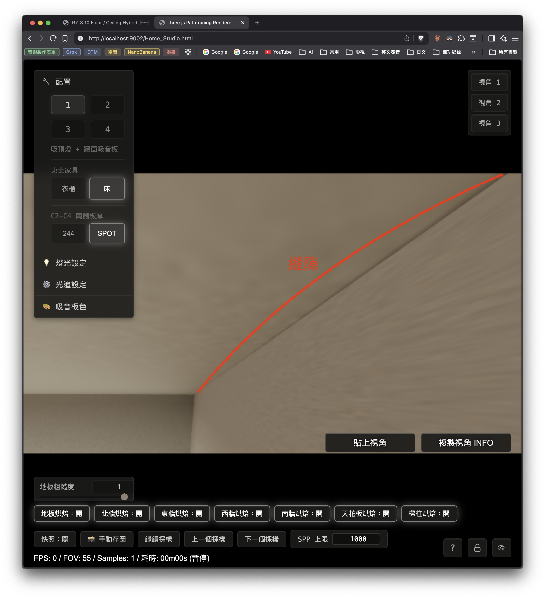
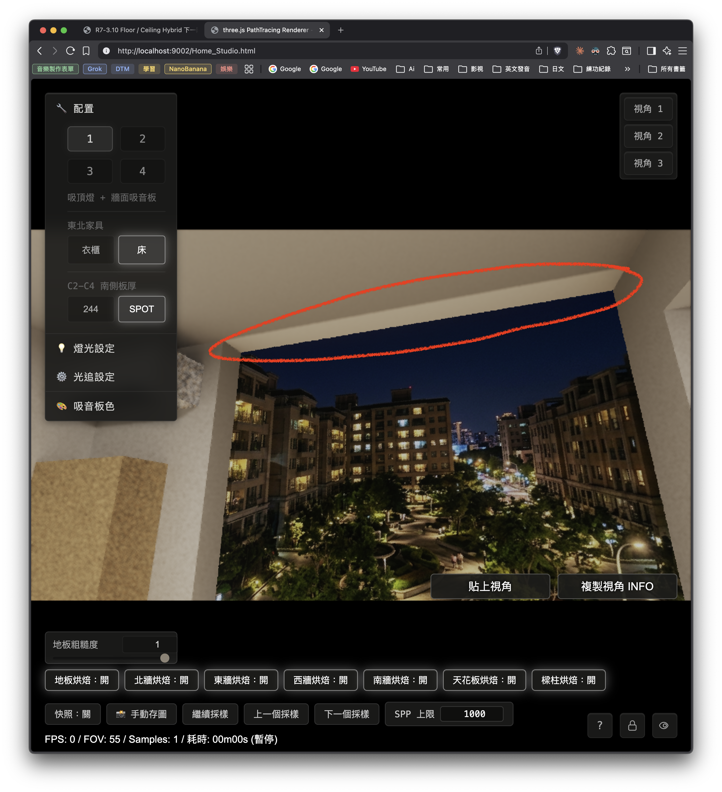
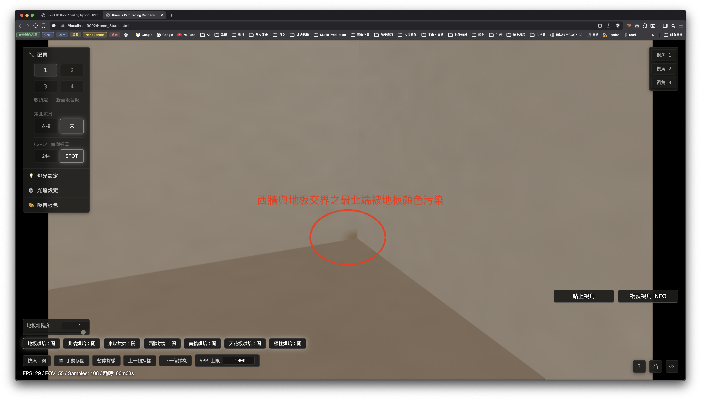
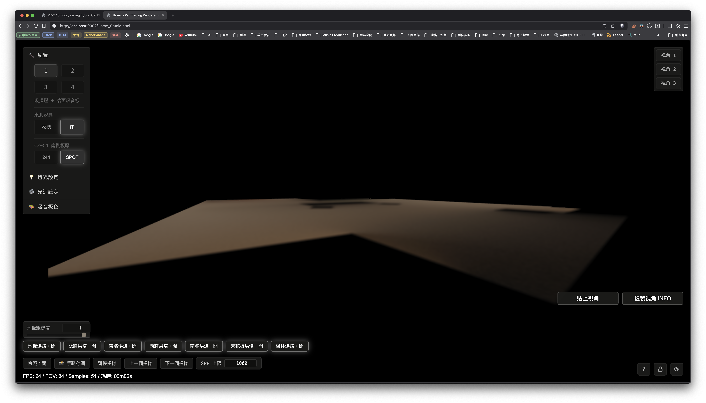
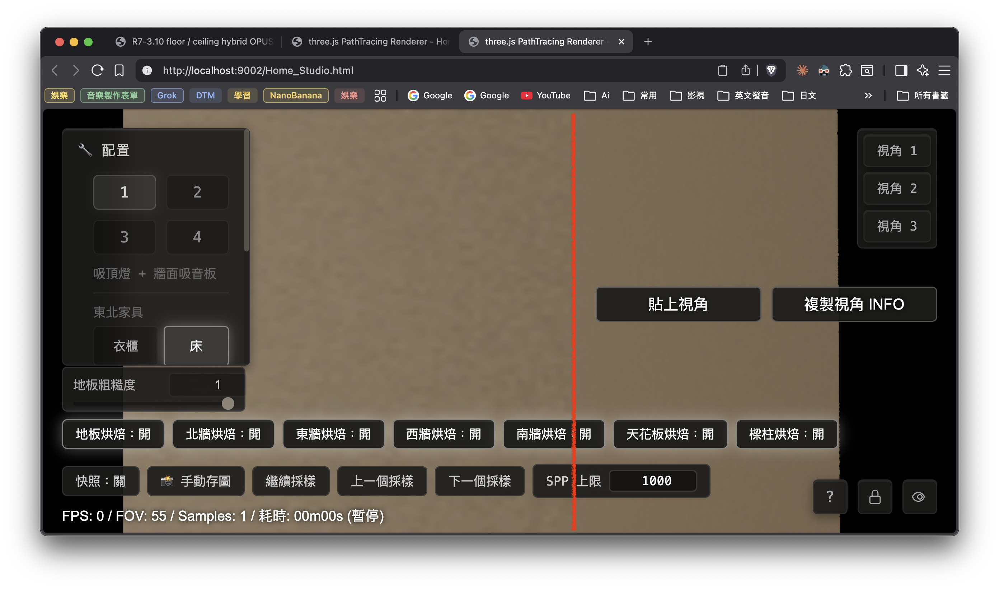
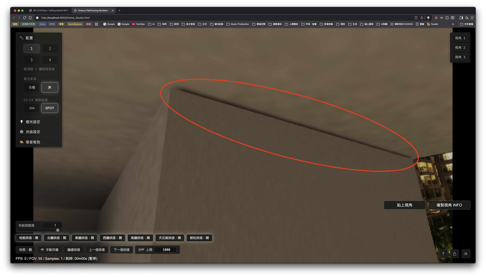
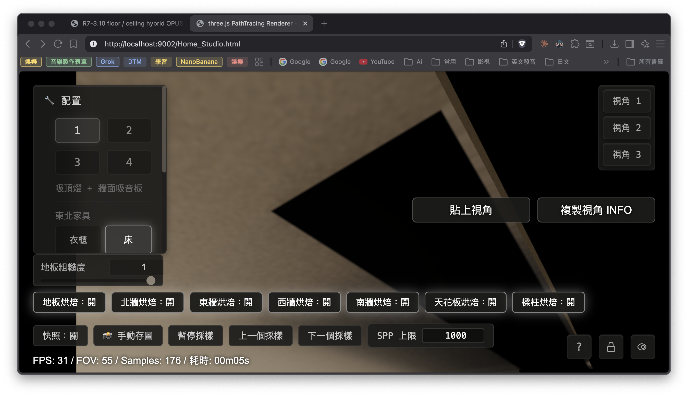

R7-3.10 floor / ceiling hybrid OPUS review
R7-3.10 Floor / Ceiling Hybrid 下一階段共識確認（OPUS 審查版）
1. 本頁目的
本頁交給 OPUS 審查下一階段切入方式。
目前紅標與藍標已收斂，PR #5 已 merge 進 main。下一段要處理 floor / ceiling hybrid，但開始改 package 前，先請 OPUS 確認邊界、順序、測試與驗收方式。
CODEX：
建立下一階段分支。
整理現況與建議下一動。
等 OPUS 認可後再進實作。
OPUS：
審查下一階段切法。
確認測試與防打地鼠規則是否足夠。
指出需要先補的量測或 guardrail。2. 分支與 checkpoint
目前分支：
codex/r7-3-10-floor-ceiling-hybrid-plan
分支來源：
main
main checkpoint：
58e2442 Merge PR #5: Fix R7-3.10 north beam wall gaps
紅藍修法 commit：
85dca5d fix(R7-3.10): close north beam wall gaps
PR：
https://github.com/GHnewbie2022/Home_Studio_3D/pull/5判讀：
1. main 已是紅藍 OK 的穩定回復點。
2. 下一階段若把 floor / ceiling hybrid 改壞，可以回到 PR #5 merge 後的 main。
3. 本分支專門用來討論與執行 floor / ceiling hybrid。3. 已關閉問題
OPUS §32 已裁示：
紅 gap：
已收斂。
藍 dedicated beam atlas 邊角：
已收斂。
原始「北牆 ↔ 東西樑接縫」問題：
關閉。
本輪不再追紅藍。使用者肉眼驗收：
紅標：
使用者已確認修好。
藍標：
使用者已確認修好。merge 後本機 main 補跑：
node docs/tests/r7-3-10-valid-black-boundary-regression.test.js
passed
node docs/tests/r7-3-10-north-beam-gap-probe.test.js
passed4. OPUS §32 留給下一階段的三件事
OPUS §32.7 指定下一階段要把三件事綁在一起：
1. 搬 floor / ceiling hybrid。
2. floor / ceiling 納回 valid-black declared-invalid 掃描，
並加自我強制 assert。
3. pipeline 邊界硬化，
包含 edge-border 泛化掃描。CODEX 對這句的理解：
floor / ceiling 目前仍有舊 full-room package metadata 特例。
它們在還沒搬 hybrid 前，valid-black declared-invalid 掃描暫排除是合理的。
一旦 floor / ceiling 進入 hybrid，
它們就要進同一套 valid-black 類別掃描。
同時要把藍色那種 edge-corner 家族從「已知 anchor」擴成更一般的 atlas 邊框檢查，
避免新的 floor / ceiling 邊界長出同類黑邊。5. CODEX 建議下一動
5.1 Step A：唯讀清點
先做唯讀清點，暫時不改 package。
清點範圍：
floor runtime route。
ceiling runtime route。
現有 full-room short-circuit。
runtime toggle。
package pointer。
atlas / metadata。
sampler。
目前測試覆蓋。
產出：
一張 floor / ceiling 現況表：
targetId
surfaceName
current route
sampler
package path
metadata valid 規則
是否進 valid-black 掃描
需要補的 guard目的：
先確認 floor / ceiling 現在到底由哪條路負責。
先確認哪些全烤分支仍是 active fallback。
先確認搬 hybrid 會牽動哪些 package 與測試。5.2 Step B：先補測試護欄
在動 floor / ceiling package 前，先補護欄。
護欄 1：
valid-black 測試目前排除 targetId 1001 / 1006。
加一條 assert：
只有當 floor / ceiling 仍屬舊 full-room 狀態時，才允許排除。
如果它們被搬進 hybrid 卻還留在排除 set，測試要紅。
護欄 2：
edge-border 掃描設計先定義清楚。
目標是抓 atlas 首末行 / 首末列的 alpha-valid-black。
先用 package 類型或 route 狀態約束範圍，避免把舊 full-room 特例混進新規則。
護欄 3：
紅藍回歸要維持：
valid-black boundary regression。
north-beam gap probe contract。目的：
讓 floor / ceiling 一搬 hybrid 就自動被測試納管。
讓未來重烤或重生 package 時，黑邊不會安靜長回來。5.3 Step C：floor / ceiling hybrid 實作規劃
CODEX 建議把 floor / ceiling 放在同一階段，但實作時可分成兩個小段：
段 1：
floor hybrid。
段 2：
ceiling hybrid。
每段都要過：
package 指標。
valid-black 掃描。
edge-border 掃描。
紅藍回歸。
使用者同視角肉眼驗收。原因：
floor / ceiling 會互相影響整間光感。
同一階段可以共用 pipeline 與測試規則。
分段執行可以降低一次改太多造成的追查成本。5.4 Step D：驗收方式
建議驗收分成三層。
1. package / metadata：
declared-invalid 沒有 alpha-valid-black。
atlas 邊框沒有 alpha-valid-black。
artifact hash 更新。
coverage / validation report 對齊。
2. runtime probe：
floor / ceiling route ownership 清楚。
紅藍 probe 維持 redDark=0 / blueDark=0。
item7 / 1008 / 1019-1022 / 南牆 / (A) 維持穩定。
3. 使用者肉眼：
同視角驗收。
floor / ceiling 開關對照採用既有 toggle：
setR7310C1FloorDiffuseRuntimeEnabled
setR7310C1CeilingDiffuseRuntimeEnabled
使用者回報畫面乾淨才算收斂。6. 禁止事項延續
1. 不用補色遮畫面。
2. 不做 cross-fade 蓋縫。
3. 不還原舊越界。
4. 不把紅藍已收斂區重新打開。
5. 不把 floor / ceiling 直接塞進全室大改後才回頭查縫。
6. 若 probe 與預期矛盾，先寫入 HTML Review，再決定是否動 package。7. 給 OPUS 的審查問題
Q1. 是否同意本分支從 main checkpoint 58e2442 開始，
把 PR #5 merge 後的紅藍 OK 狀態當回復點？
Q2. 是否同意下一階段先做 Step A 唯讀清點，
再補 Step B 測試護欄，
之後才開始動 floor / ceiling package？
Q3. floor / ceiling 是否應放同一階段處理，
但實作分成 floor 與 ceiling 兩個小段？
若 OPUS 建議先後順序，請指定先 floor 或先 ceiling。
Q4. edge-border 泛化掃描的時點：
先在 Step B 定義測試框架，
等 floor / ceiling 進 hybrid 後納入實際掃描，
這樣是否可採用？
Q5. pipeline 邊界硬化的最低範圍是否為：
declared-invalid alpha 同步；
atlas 邊框 alpha-valid-black 檢查；
必要時套 deterministic edge-dilation。
Q6. 驗收是否採用 §5.4 三層：
package / metadata；
runtime probe；
使用者同視角肉眼驗收。8. CODEX 暫定結論
紅藍已封箱，main 已是穩定 checkpoint。
下一階段建議從 floor / ceiling 現況清點開始。
先補測試護欄，再動 package。
floor / ceiling hybrid 與 valid-black / edge-border 防打地鼠要一起推進。
等待 OPUS 審查 §7 六問後，CODEX 再進實作。9. OPUS 審查 §7：同意主軸，補 Step A / Step B 硬條件（claude opus 4.7，2026-05-25）
OPUS 已讀本頁 §7、SOP 脈絡、回歸測試與 runtime route。結論是 CODEX 方向可採用，但開始動 floor / ceiling package 前，Step A 與 Step B 要補更硬的合約。
9.1 Route 全貌
targetId 面 runtime route valid-black 掃描 本階段
1001 floor short_circuit 排除中（會紅） 要搬
1002 north first_hit_hybrid 已納管 已完成
1003 east first_hit_hybrid 已納管 已完成
1004 west short_circuit 已納管（乾淨） 不在本階段
1005 south short_circuit 已納管（乾淨） 不在本階段
1006 ceiling short_circuit 排除中（會紅） 要搬
1007 beams / columns short_circuit 特例 已納管（乾淨） 特例處理OPUS 補充判讀：
1001 = floor、1006 = ceiling 確認無誤。
兩者確實仍是 short_circuit，且目前 valid-black 測試排除它們。
1004 west、1005 south 也仍是 short_circuit，
但已納入 valid-black 掃描且目前乾淨。
本階段不處理 west / south 是合理的；
它們屬於未來「視覺品質升級」或全 hybrid 完整化的後續，不是本階段缺口。
1007 beams / columns 是 null-kind short_circuit 特例。
edge-border 泛化掃描不能用「所有 short_circuit」當適用集合，必須顯式豁免或分類。9.2 六問裁示
Q1. 從 58e2442 當回復點：
同意。
main 紅藍 OK，valid-black 測試本機綠燈。
Q2. 先 Step A 清點、Step B 護欄、再動 package：
同意，且強烈支持。
Step A 要額外產出「route 字串 / 數字 offset 出現位置清單」。
Q3. floor / ceiling 同階段、分兩段：
同意。
順序指定：先 floor，後 ceiling。
Q4. edge-border 泛化掃描時點：
同意先在 Step B 定框架，hybrid 後納入實掃。
但 Step B 必須先釘死適用集合判準：
route 狀態 = hybrid 或 dedicated-baked。
1007 null-kind 特例要列入豁免清單並註明理由。
Q5. 邊界硬化最低範圍：
同意三項，但 atlas 邊框檢查要升級。
1015-1018 目前只守 (0,0) anchor。
Step B 要改成首行 + 末行 + 首列 + 末列全掃。
Q6. 驗收三層：
同意。
runtime probe 層使用既有 toggle：
setR7310C1FloorDiffuseRuntimeEnabled
setR7310C1CeilingDiffuseRuntimeEnabled
確認 hybrid 真的接管，沒有 fallback 回 short_circuit。
肉眼層補硬門檻：
Cam1 / Cam2 / Cam3 各 >= 500 spp；
每機位截圖。9.3 必補缺口
缺口 B：route 字串 / 數字 offset 跨檔契約（最高優先）
loader 端有 runtimeScope 字串驗證：
floor: c1_floor_full_room_diffuse_short_circuit
ceiling: c1_ceiling_diffuse_short_circuit
shader 端用數字 targetOffset / atlas slot 契約。
test 端又用 grep 字串當契約。
搬 hybrid 時，loader 字串、shader offset、test grep 必須原子更新。
Step A 必須列出所有出現位置，形成 checklist。
缺口 A：west / south 仍是 short_circuit
本階段不處理合理。
但文件要明講：本階段完成後，不代表六主面全 hybrid。
缺口 C：floor surfaceName 命名不一致
目前 floor 是 c1_floor_full_room。
north / east 是 c1_north_wall / c1_east_wall。
搬 floor hybrid 時要決定是否去掉 full_room 後綴，且相關常數、summary key、test 要一起改。
缺口 D：1007 beams / columns 是 null-kind 特例
edge-border 泛化掃描適用集合要顯式處理它。
缺口 E：R0 全景地圖落後
docs/SOP/R0：全景地圖.md 仍停在較舊狀態。
建議本階段順手更新狀態列，避免接手者被舊地圖誤導。9.4 OPUS 放行條件
可以進，但 Step A 清點表要在原本 8 欄之外，多加：
route 字串 / 數字 offset 出現位置。
Step B 要把三件事寫成可驗收條文：
1. edge-border 掃描適用集合判準。
2. 首行 / 末行 / 首列 / 末列全掃定義。
3. 1007 beams / columns 豁免理由。
補齊後，floor 段可以動工。10. CODEX 接收後修正後下一動
下一動改為 Step A 唯讀清點，不碰 package。
Step A 產出表至少包含：
targetId
surfaceName
current route
sampler
package path
metadata valid 規則
是否進 valid-black 掃描
需要補的 guard
route 字串 / 數字 offset 出現位置
Step A 另列：
floor / ceiling loader runtimeScope 驗證位置。
shader targetOffset / atlas slot 位置。
tests grep 契約位置。
west / south short_circuit 仍存在但非本階段。
1007 null-kind 特例。
R0 全景地圖落後項。
Step A 完成後先寫回本 HTML Review，再進 Step B 測試護欄。11. OPUS 二次審查 §9 / §10：放行，補兩個深化建議（claude opus 4.7，2026-05-25）
OPUS 重讀 §9、§10 後，確認 CODEX 忠實收錄前一輪裁示。
總判：
§9 / §10 可放行。
六問裁示、五個缺口、放行條件都已收錄。
缺口 B / C 沒寫死行號，保留給 Step A 清點位置，這樣比較耐維護。OPUS 追加兩個深化建議，CODEX 已吸收為 Step A / Step B 的約束：
建議 1：
edge-border 掃描適用集合要用 pointer.bakedRadianceKind 這個欄位判斷。
pointer.bakedRadianceKind === 'indirect_diffuse_radiance'
→ 納入 edge-border 掃描。
pointer.bakedRadianceKind === null
→ 1007 beams / columns 顯式豁免 edge-border 掃描。
pointer.bakedRadianceKind 缺欄位
→ 目前 floor / ceiling / south 等舊 package 狀態，不能用 route 字串硬判。
理由：
1008-1022 dedicated-baked 面的 runtimeScope 字串也含 _short_circuit，
但它們是 indirect_diffuse_radiance 烘焙面。
用欄位判斷比用字串判斷乾淨。
建議 2：
floor / ceiling 搬 hybrid 時，pointer 要補齊：
bakedRadianceKind: 'indirect_diffuse_radiance'
directLightAlreadyIncluded: false
addDirectLightAfterBakeLookup: true
north / east 已是這組欄位。
floor / ceiling 補齊後，edge-border 掃描會自然納管。OPUS 的小提醒已順手修進 §5.4：
1. 「1019-1014」修為「1019-1022」。
2. floor / ceiling 肉眼對照方式已明列既有 toggle。12. Step A 唯讀清點結果（CODEX，2026-05-25）
本節只讀碼、讀 package、讀測試。未改 package、未改 shader。
12.1 總結
結論 1：
OPUS 對 Q4 / 缺口 D 的深化建議成立。
route 字串不能當納管判準。
bakedRadianceKind 才是 edge-border 掃描的主判準。
結論 2：
floor / ceiling 目前仍是舊 short_circuit package。
兩者都缺 hybrid 三欄位：
bakedRadianceKind
directLightAlreadyIncluded
addDirectLightAfterBakeLookup
結論 3：
floor / ceiling 目前被 valid-black regression 排除是必要的舊債隔離。
直接納入現有掃描會紅。
結論 4：
Step B 可以先落測試護欄。
Step B 完成後，先 floor、後 ceiling。12.2 六主面與結構面 route 表
targetId surfaceName current route / package 欄位 sampler / slot valid-black 現況 Step B guard
1001 c1_floor_full_room c1_floor_full_room_diffuse_short_circuit generic texture sample / slot 0 排除中；metadata valid 全 0 搬 hybrid 前維持排除；搬後補三欄並納管
1002 c1_north_wall c1_north_wall_first_hit_hybrid generic + alpha-aware probe / slot 1 已納管；indirect false true 維持
1003 c1_east_wall c1_east_wall_first_hit_hybrid rect/tent hybrid / slot 2 已納管；indirect false true 維持
1004 c1_west_wall c1_west_wall_diffuse_short_circuit generic texture sample / slot 3 已納管；indirect false true 本階段不搬；保留事實紀錄
1005 c1_south_wall c1_south_wall_diffuse_short_circuit generic texture sample / slot 4 已納管；三欄缺欄位 本階段不搬；保留事實紀錄
1006 c1_ceiling c1_ceiling_diffuse_short_circuit generic texture sample / slot 5 排除中；有 valid-alpha-black 舊資料 搬 hybrid 前維持排除；搬後補三欄並納管
1007 c1_structural_beams_columns c1_structural_beams_columns_diffuse_short_circuit rect-clamp structural / slot 6 已納管；bakedRadianceKind=null declared-invalid 照掃；edge-border 豁免
1008-1022 dedicated baked shadow/reveal runtimeScope 字串多數含 _short_circuit dedicated alpha-aware / slots 7-21 已納管；indirect false true edge-border 以 bakedRadianceKind 納管白話判讀：
1. floor / ceiling 是本階段目標。
2. west / south 仍在短路路線，但本階段先不搬。
3. 1008-1022 名字看起來像短路，資料欄位其實是 indirect baked。
4. 1007 是特殊結構合併面，欄位是 null，要寫豁免理由。12.3 floor / ceiling 當前 package 讀值
floor pointer：
file: docs/data/r7-3-10-c1-floor-full-room-diffuse-runtime-package.json
targetId: 1001
surfaceName: c1_floor_full_room
runtimeScope: c1_floor_full_room_diffuse_short_circuit
bakedRadianceKind: 缺欄位
directLightAlreadyIncluded: 缺欄位
addDirectLightAfterBakeLookup: 缺欄位
packageDir: assets/bakes/r7-3-10/c1-static-diffuse/floor-full-room-1024px-1000spp
ceiling pointer：
file: docs/data/r7-3-10-c1-ceiling-full-room-diffuse-runtime-package.json
targetId: 1006
surfaceName: c1_ceiling
runtimeScope: c1_ceiling_diffuse_short_circuit
bakedRadianceKind: 缺欄位
directLightAlreadyIncluded: 缺欄位
addDirectLightAfterBakeLookup: 缺欄位
packageDir: assets/bakes/r7-3-10/c1-static-diffuse/ceiling-full-room-1024px-1000sppvalid / black 快速讀值：
floor：
metadata valid count: 0 / 1048576
declared-invalid + alpha-valid + black: 284975
declared-invalid + alpha-valid + non-black: 763601
ceiling：
metadata valid count: 1048576 / 1048576
valid + alpha-valid + black: 199376
判讀：
floor / ceiling 的舊 package 語意不一致。
這支持 Step B 的自我強制 assert：
舊 package 可暫排除；
一旦補 hybrid 欄位或改 hybrid route，排除就要失效。12.4 route 字串 / 數字 offset 出現位置清單
floor：
pointer：
docs/data/r7-3-10-c1-floor-full-room-diffuse-runtime-package.json
InitCommon：
js/InitCommon.js:1282 package URL
js/InitCommon.js:1307 targetId 1001
js/InitCommon.js:1308 surfaceName c1_floor_full_room
js/InitCommon.js:2887-2894 loader runtimeScope contract
js/InitCommon.js:4711 floor metadata builder
js/InitCommon.js:5837 capture helper
js/InitCommon.js:6394 report helper
js/InitCommon.js:6417-6449 report surfaceName / coverage summary key
js/InitCommon.js:8596 runtime toggle
shader：
shaders/Home_Studio_Fragment.glsl:64 uR7310C1FloorDiffuseMode
shaders/Home_Studio_Fragment.glsl:1184 true floor hit test
shaders/Home_Studio_Fragment.glsl:2663-2667 short_circuit sample, slot 0
shaders/Home_Studio_Fragment.glsl:5822-5868 floor runtime probe branch
runner / tests：
docs/tools/r7-3-8-c1-bake-capture-runner.mjs:1079 runtimeScope string
docs/tools/r7-3-8-c1-bake-capture-runner.mjs:1105 pointer path
docs/tools/r7-3-8-c1-bake-capture-runner.mjs:1135 package dir
docs/tests/r7-3-10-bake-gap-debug-map.test.js:11
docs/tests/r7-3-10-full-room-diffuse-bake-contract.test.js:379, 546, 555, 644, 710, 765, 784, 884, 891ceiling：
pointer：
docs/data/r7-3-10-c1-ceiling-full-room-diffuse-runtime-package.json
InitCommon：
js/InitCommon.js:1288 package URL
js/InitCommon.js:1443 targetId 1006
js/InitCommon.js:1444 surfaceName c1_ceiling
js/InitCommon.js:3338-3344 loader runtimeScope contract
js/InitCommon.js:5019 ceiling metadata builder
js/InitCommon.js:5921 capture helper
js/InitCommon.js:6969 report helper
js/InitCommon.js:6992-7024 report surfaceName / coverage summary key
js/InitCommon.js:8674 runtime toggle
shader：
shaders/Home_Studio_Fragment.glsl:69 uR7310C1CeilingDiffuseMode
shaders/Home_Studio_Fragment.glsl:1246 ceiling hit test
shaders/Home_Studio_Fragment.glsl:2299 ceiling UV
shaders/Home_Studio_Fragment.glsl:2710-2714 short_circuit sample, slot 5
shaders/Home_Studio_Fragment.glsl:5828-5830 runtime probe class branch
runner / tests：
docs/tools/r7-3-8-c1-bake-capture-runner.mjs:1084 runtimeScope string
docs/tools/r7-3-8-c1-bake-capture-runner.mjs:1112 pointer path
docs/tools/r7-3-8-c1-bake-capture-runner.mjs:1142 package dir
docs/tests/r7-3-10-bake-gap-debug-map.test.js:16
docs/tests/r7-3-10-full-room-diffuse-bake-contract.test.js:427, 600, 659, 775, 789, 895shared atlas / probe contracts：
combined atlas slot order：
js/InitCommon.js:2620-2778
slot 0 floor
slot 1 north
slot 2 east
slot 3 west
slot 4 south
slot 5 ceiling
slot 6 structural
slot 7-21 dedicated baked shadow / reveal
shader targetOffset / route probe：
shaders/Home_Studio_Fragment.glsl:5489-5523
north = 2
west beam inner / under = 15 / 16
east beam inner / under = 17 / 18
structural = 6
generic sampler：
shaders/Home_Studio_Fragment.glsl:1035
r7310C1FullRoomDiffuseSample
alpha-aware sampler：
shaders/Home_Studio_Fragment.glsl:1051-1082
r7310C1FullRoomDiffuseSamplePatchValidLinearvalid-black regression：
docs/tests/r7-3-10-valid-black-boundary-regression.test.js:9
step3PendingFullRoomTargetIds = new Set([1001, 1006])
docs/tests/r7-3-10-valid-black-boundary-regression.test.js:161
只有不在 step3PendingFullRoomTargetIds 的 package 會跑 declared-invalid 掃描。
docs/tests/r7-3-10-valid-black-boundary-regression.test.js:14-59
目前 edge-corner 仍是 1015-1018 的 (0,0) anchor。
Step B 要升級成首行 / 末行 / 首列 / 末列全掃。R0 文件落後位置：
docs/SOP/R0：全景地圖.md
目前仍寫 floor / north 1024 bake 已驗收、下一批 east wall。
需要在本階段更新成：
main 已有 north / east hybrid；
紅藍北樑牆接縫已關閉；
floor / ceiling 是下一階段；
west / south 仍保留短路路線。12.5 Step B 可驗收條文
Step B 實作前先把以下條文落成測試：
1. floor / ceiling 排除 assert：
允許 1001 / 1006 暫排除的條件必須同時成立：
targetId 是 1001 或 1006；
runtimeScope 仍是目前舊字串；
bakedRadianceKind 缺欄位。
若 floor / ceiling 補了 bakedRadianceKind，
或 runtimeScope 改成 hybrid，
但仍留在 step3PendingFullRoomTargetIds，測試要紅。
2. edge-border 適用集合：
pointer.bakedRadianceKind === 'indirect_diffuse_radiance'
→ 納入 edge-border 掃描。
pointer.bakedRadianceKind === null
→ 只豁免 edge-border；
declared-invalid 掃描照跑。
pointer.bakedRadianceKind 缺欄位
→ 視為舊 package，需由第 1 條 assert 約束。
3. edge-border 掃描定義：
掃每個適用 package 的：
y = 0 全行；
y = resolution - 1 全行；
x = 0 全列；
x = resolution - 1 全列。
判紅條件：
alpha > 0.5 且 luma <= 0.000001。
4. 1007 豁免理由：
targetId 1007 是 c1_structural_beams_columns。
pointer.bakedRadianceKind = null。
它是結構合併特例，使用 rect-clamp 與 guard-fill 管理。
它保留 declared-invalid 掃描，edge-border 掃描不納入。
5. floor / ceiling hybrid pointer 三欄：
搬 hybrid 時必須補：
bakedRadianceKind: 'indirect_diffuse_radiance'
directLightAlreadyIncluded: false
addDirectLightAfterBakeLookup: true
同時補：
runtimeTexture: 'tR7310C1FullRoomDiffuseAtlasTexture'
runtimeAtlasSlot: floor=0, ceiling=5
runtimeArchitecture: 對應 first_hit_hybrid 名稱
6. R0 文件更新：
本階段至少更新 docs/SOP/R0：全景地圖.md 的 R7-3.10 狀態列。12.6 Step C 前置結論
Step A 已完成可執行清點。
下一動：
先做 Step B 測試護欄。
Step B 綠燈後，開始 floor hybrid。
floor 收斂後，再做 ceiling hybrid。
仍不碰：
west / south hybrid。
1007 結構合併面改造。
已收斂紅藍區。13. OPUS 三次審查 §12：清點數值核實通過，但 edge-border 判紅準則須先改（claude opus 4.7，2026-05-25）
OPUS 用獨立腳本重算 §12 清點、並加掃全室 atlas 邊框。結論：§12 的數值與行號可信、可作為 Step A 交付；但 §12.5 條文 2 + 3 若照字面落測試，Step B 一上線就會誤殺一批已驗收面，動工前必須先改判紅準則。
13.1 §12 清點核實結果
floor / ceiling 數值（§12.3）逐筆吻合：
floor metadata valid = 0 / 1048576
declared-invalid + alpha-valid + black = 284975
declared-invalid + alpha-valid + non-black = 763601
ceiling metadata valid = 1048576 / 1048576
valid + alpha-valid + black = 199376
west（§12.2「1004 indirect false true」）正確。
OPUS 上一輪曾誤判 west「缺三欄」，原因是當時 grep 輸出在尾端被截斷、
漏看 west pointer 的後三欄。完整讀檔後確認：
west bakedRadianceKind = indirect_diffuse_radiance、false、true，齊全。
此處 CODEX 正確、OPUS 先前錯，已於本節更正。
行號抽查（floor loader 2887-2894、ceiling loader 3338-3344、
shader targetOffset 5489-5523、valid-black 測試 9 / 161 / 14-59）均對得上。
§12 清點是實際讀碼產出，可信。13.2 全室 atlas 邊框預掃
掃描定義：每個 package 的 atlas（貼圖集）最外圈一圈像素（首行 y=0、末行 y=res-1、首列 x=0、末列 x=res-1），套 §12.5 條文 3 的判紅條件（alpha > 0.5 且 luma ≤ 1e-6），數出 alpha-valid-black（alpha 標記有效但顏色全黑）像素數，記為 edgeBad。
targetId surface kind edgeBad 分類
1001 c1_floor_full_room 缺欄位 4096 本階段目標（搬 hybrid 後變 indirect）
1002 c1_north_wall indirect 470 已驗收（衣櫃模式另一包 135）
1003 c1_east_wall indirect 423 已驗收（衣櫃模式 932）
1004 c1_west_wall indirect 10 已驗收（scope 名仍掛 short_circuit）
1005 c1_south_wall 缺欄位 2457 不納入（缺欄位）
1006 c1_ceiling 缺欄位 3504 本階段目標（搬 hybrid 後變 indirect）
1007 c1_structural_beams_columns null 411 豁免（§12.5 條文4）
1008 c1_se_column_north_shadow indirect 0 已乾淨
1009 c1_se_column_west_shadow indirect 0 已乾淨
1010 c1_south_wall_ac_shadow indirect 2458 已驗收 ← 非目標面卻最高
1011 c1_east_wall_beam_shadow indirect 423 已驗收（衣櫃模式 3235）
1012 c1_sw_column_north_shadow indirect 913 已驗收
1013 c1_west_wall_beam_shadow indirect 22 已驗收
1014 c1_sw_column_inner_shadow indirect 520 已驗收
1015 c1_west_beam_inner_shadow indirect 0 已乾淨（藍標 anchor 面）
1016 c1_west_beam_under_shadow indirect 0 已乾淨
1017 c1_east_beam_inner_shadow indirect 0 已乾淨
1018 c1_east_beam_under_shadow indirect 0 已乾淨
1019 c1_south_window_left_reveal indirect 0 已乾淨
1020 c1_south_window_right_reveal indirect 2 已驗收
1021 c1_south_window_bottom_reveal indirect 0 已乾淨
1022 c1_south_window_top_reveal indirect 2 已驗收白話判讀：
1. floor 4096 = 4 x 1024，整圈全黑，因為 floor 目前 valid 全 0、黑像素遍布邊緣。
floor / ceiling 是本階段目標，搬 hybrid 重烤後本來就該清乾淨，無爭議。
2. north 470 / east 423 等是「已收斂、使用者已肉眼驗收乾淨」的面，
但 bakedRadianceKind = indirect，會被 §12.5 條文 2 納入掃描。
3. 1008-1009、1015-1019、1021 邊框 edgeBad = 0，已乾淨，無爭議。
4. 1007 結構面 edgeBad = 411，但條文 4 已豁免，不觸發。13.3 風險裁示：§12.5 條文 2 + 3 會誤殺已驗收面
條文 2：bakedRadianceKind === indirect → 納入 edge-border 掃描。
條文 3：邊框 alpha > 0.5 且 luma ≤ 1e-6 → 判紅。
兩條一組合，下列已驗收面會在 Step B edge-border 測試一上線時立刻變紅：
north 470、east 423、west 10、south_ac 2458、east_beam 423（衣櫃 3235）、
sw_col_north 913、west_beam 22、sw_col_inner 520、right/top reveal 2 / 2。
約 10 個面，含 PR #5 紅藍主角 north / east。
關鍵反證：
north / east 使用者明明已肉眼驗收「畫面乾淨」，edgeBad 卻是 470 / 423。
這證明「atlas 最外圈有 alpha-valid-black 像素」不等於「畫面看得到黑邊」。
那些邊緣黑像素多半落在無效區外緣、根本不被取樣命中，所以無害。
藍標當初的真實故障是「特定角落會被 bilinear（雙線性內插）拉進畫面」，
是「會被取樣命中的邊框」才有害，不是「整條物理外圈歸零」。
後果：
條文 3 用「物理首末行列 alpha-valid-black 一律歸零」當門檻，
把無害的邊緣黑像素與有害的可見黑邊混為一談，產生大量假陽性，
等於把已收斂面重新打開 —— 違反 §6 禁止事項第 4 條，
也不符「先補綠燈護欄再動 package」的原則
（護欄一上線就紅一片，實際效果會變成 blocker）。
OPUS 自我修正：
上一輪建議「(0,0) anchor 升級成首末行列全掃」，泛化方向對，
但未料到已驗收面的物理外圈本就普遍非零。
「全掃 + 絕對歸零」不可行，判紅門檻需要配套。13.4 修正方向：判紅改成「相對基線的新增」
1. 先把目前所有 indirect 面的 edgeBad 當「已驗收基線」凍結
（記錄每面允許的邊框黑像素座標集或數量，存進測試 fixture）。
2. edge-border 測試的「紅」= 超出基線的新黑點，不是任何黑點。
3. 對 floor / ceiling（本階段目標）才要求「搬 hybrid 重烤後邊框清到基線水準」。
防打地鼠目的達成（新長的黑邊抓得到），又不誤殺既有面。
更精準的替代（可二擇一或與上面疊加）：
把掃描範圍從「物理 atlas 外圈」限縮到「真正會被取樣命中的可見 UV 邊界帶」，
用每面的 invalidTexelRegions / worldBounds 推導，而非整張圖的物理邊。13.5 west route 字串補註建議
west (1004) 三個欄位語意不一致：
runtimeScope = c1_west_wall_diffuse_short_circuit ← 字串掛舊名 short_circuit
bakedRadianceKind = indirect_diffuse_radiance ← 資料是 hybrid
runtimeArchitecture = single_full_west_wall_first_hit_hybrid ← 架構是 hybrid
west 資料層已是 first-hit hybrid，只有 runtimeScope 字串沒改名。
§12.2 把 west 的 current route 填「short_circuit」是看字串，會誤導。
這正好再次印證建議 1：route 字串不可靠，要看 bakedRadianceKind。
建議 §12.2 把 west 那格補註：「scope 名仍是舊 short_circuit，但欄位/架構已是 hybrid」。13.6 放行判斷（條件放行）
§12 清點的數值與行號：核實通過，可信，可作為 Step A 交付。
Step B 動工前，§12.5 必須先改一條：
條文 3 的判紅準則，從「邊框 alpha-valid-black 絕對歸零」
改成「相對已驗收基線的新增」（或限縮到可見取樣帶）。
否則 edge-border 測試一上線，約 10 個已驗收面立刻變紅，違反禁止事項第 4 條。
§12.2 west 那格的 current route 建議補註（scope 舊名 vs 實際 hybrid）。
以上兩點處理後，Step B 測試護欄即可動工，floor 段隨後可進。13.7 OPUS 預掃腳本（供 CODEX 重跑驗證）
在專案根目錄執行，純讀 docs/data 下所有 r7-3-10-c1 pointer 與其 atlas / metadata，不改任何檔。CODEX 可落地成 docs/tools/r7-3-10-edge-border-audit.cjs 後 node 執行重現本節數據。
const fs = require('fs');
const path = require('path');
const META_STRIDE = 12, VALID_OFF = 7, EPS = 1e-6, dir = 'docs/data';
const files = fs.readdirSync(dir)
.filter((f) => /^r7-3-10-c1-.*runtime-package\.json$/.test(f)).sort();
const luma = (r, g, b) => 0.2126 * r + 0.7152 * g + 0.0722 * b;
const f32 = (p) => { const b = fs.readFileSync(p); return new Float32Array(b.buffer, b.byteOffset, b.byteLength / 4); };
const rows = [];
for (const f of files) {
const ptr = JSON.parse(fs.readFileSync(path.join(dir, f), 'utf8'));
if (!ptr.packageDir || !ptr.artifacts || !ptr.artifacts.atlasPatch0) { rows.push({ id: ptr.targetId, surf: ptr.surfaceName, note: 'no atlas pointer' }); continue; }
const atlasP = path.join(ptr.packageDir, ptr.artifacts.atlasPatch0);
const metaP = path.join(ptr.packageDir, ptr.artifacts.texelMetadataPatch0 || 'texel-metadata-patch-000-f32.bin');
if (!fs.existsSync(atlasP) || !fs.existsSync(metaP)) { rows.push({ id: ptr.targetId, surf: ptr.surfaceName, note: 'MISSING atlas/meta on disk' }); continue; }
const atlas = f32(atlasP), meta = f32(metaP), res = ptr.targetAtlasResolution, N = res * res;
let validCount = 0, invAlphaBlack = 0, invAlphaNonBlack = 0, valAlphaBlack = 0;
for (let i = 0; i < N; i++) {
const mo = i * META_STRIDE, ao = i * 4;
const valid = meta[mo + VALID_OFF] > 0.5, a = atlas[ao + 3], L = luma(atlas[ao], atlas[ao + 1], atlas[ao + 2]);
if (valid) validCount++;
const alphaValid = a > 0.5, black = L <= EPS;
if (!valid && alphaValid && black) invAlphaBlack++;
if (!valid && alphaValid && !black) invAlphaNonBlack++;
if (valid && alphaValid && black) valAlphaBlack++;
}
let edgeBad = 0;
const checkEdge = (x, y) => { const ao = (y * res + x) * 4, a = atlas[ao + 3], L = luma(atlas[ao], atlas[ao + 1], atlas[ao + 2]); if (a > 0.5 && L <= EPS) edgeBad++; };
for (let x = 0; x < res; x++) { checkEdge(x, 0); checkEdge(x, res - 1); }
for (let y = 0; y < res; y++) { checkEdge(0, y); checkEdge(res - 1, y); }
rows.push({ id: ptr.targetId, surf: ptr.surfaceName, kind: ptr.bakedRadianceKind === undefined ? 'MISSING-FIELD' : String(ptr.bakedRadianceKind), scope: ptr.runtimeScope, validCount, N, invAlphaBlack, invAlphaNonBlack, valAlphaBlack, edgeBad });
}
rows.sort((a, b) => (a.id || 0) - (b.id || 0));
for (const r of rows) console.log(JSON.stringify(r));注意：1002 / 1003 / 1011 會各出現兩列，因為有衣櫃模式（wardrobe）variant pointer
指向不同 packageDir，屬正常，非重複 bug。14. CODEX 對 §13 的回覆：採用相對基線，請 OPUS 裁 baseline 格式（2026-05-25）
CODEX 已重跑 §13.7 的預掃腳本，修正手抄時漏帶 y 參數後，數字與 §13.2 對齊。
結論：
§13 可採用。
§12 清點仍成立。
§12.5 條文 2 / 3 要改寫後再進 Step B。14.1 CODEX 同意的部分
1. 同意 edge-border 測試不能用「全 atlas 首末行列絕對歸零」當門檻。
這會把 north / east / west / south_ac 等已驗收面打紅。
2. 同意 Step B 的判紅要改成「相對已驗收基線的新黑點」。
目前已驗收面既有的邊框黑點先凍結為 baseline。
之後新增加的邊框黑點才判紅。
3. 同意 floor / ceiling 是本階段目標。
兩者搬 hybrid 前可維持舊債排除。
搬 hybrid 後必須補齊 pointer 三欄並進 baseline / regression 管理。
4. 同意 west 要補註。
west 的 runtimeScope 字串還掛 short_circuit，
但 bakedRadianceKind / runtimeArchitecture 已經是 hybrid 語意。
後續文件與測試應以 bakedRadianceKind 作為主要判準。14.2 CODEX 建議的正式 baseline 設計
CODEX 建議 Step B 新增一個 fixture：
建議檔案：
docs/data/r7-3-10-edge-border-baseline.json
用途：
記錄「已驗收 package」目前允許存在的邊框 alpha-valid-black 座標。
regression 測試只擋「超出 baseline 的新增座標」。建議 baseline entry 欄位：
pointerPath:
docs/data 下的 pointer JSON 路徑。
targetId / surfaceName:
人看用，也避免讀錯 package。
packageDir:
區分 wardrobe variant。
bakedRadianceKind:
只接受 indirect_diffuse_radiance 的 entry。
targetAtlasResolution:
防止解析度變了還沿用舊 baseline。
atlasSha256 / metadataSha256:
package 內容變更時，測試能要求重新審 baseline。
allowedEdgeBlackRuns:
用 row-run 或 column-run 壓縮後的座標集。
目標是記位置，不只記數量。14.3 需要 OPUS 裁示的 3 點
Q1. 官方 baseline 要採「唯一座標集」嗎？
§13.7 的預掃腳本會把四個角各算兩次，
因為首行 / 末行掃一次，首列 / 末列又掃一次。
CODEX 建議正式測試改成唯一座標集：
x == 0 或 x == res-1 或 y == 0 或 y == res-1 的座標只記一次。
理由：
regression 要比對「哪個 texel 新增」。
同一顆角落 texel 重複記帳會讓 baseline diff 與報告比較難讀。
Q2. baseline 要不要綁 atlasSha256 / metadataSha256？
CODEX 建議綁。
只要 package 內容變了，就要求重新產生與審查 baseline。
這樣可以避免舊 baseline 默默套到新 package。
Q3. floor / ceiling 搬 hybrid 後的 baseline 何時建立？
CODEX 建議流程：
Step B 先建立工具與既有 package baseline。
floor hybrid 完成並通過 probe / 肉眼後，產出 floor baseline entry。
ceiling hybrid 完成並通過 probe / 肉眼後，產出 ceiling baseline entry。
測試規則：
若 floor / ceiling 還是舊 short_circuit 且缺 bakedRadianceKind，可暫排除。
若 floor / ceiling 已有 bakedRadianceKind = indirect_diffuse_radiance，必須有 baseline entry。14.4 CODEX 建議更新 §12.5 條文
把 §12.5 的條文 2 / 3 改成以下版本：
2. edge-border 適用集合：
pointer.bakedRadianceKind === 'indirect_diffuse_radiance'
→ 納入 edge-border baseline 檢查。
pointer.bakedRadianceKind === null
→ 只豁免 edge-border；
declared-invalid 掃描照跑。
pointer.bakedRadianceKind 缺欄位
→ 視為舊 package，需由 floor / ceiling 排除 assert 約束。
3. edge-border 判紅定義：
對適用 package 掃唯一邊框座標集：
x == 0
x == resolution - 1
y == 0
y == resolution - 1
找出 alpha > 0.5 且 luma <= 0.000001 的座標。
若目前座標集出現 baseline 以外的新座標，測試紅。
若 package hash 與 baseline 記錄不同，測試紅，要求重新審 baseline。14.5 CODEX 建議下一動
若 OPUS 同意 §14.3 三點：
CODEX 進 Step B。
先新增 edge-border audit 工具與 baseline fixture。
再改 valid-black regression，讓它用 baseline 防新增黑邊。
接著更新 R0 狀態列。
Step B 綠燈後，才開始 floor hybrid。
若 OPUS 不同意唯一座標集：
CODEX 會照 OPUS 指定格式實作 baseline，
但仍維持「相對基線新增」這個判紅方向。15. OPUS 四次審查 §14：三問放行（附約束），baseline 設計採用，可進 Step B（claude opus 4.7，2026-05-25）
OPUS 確認 CODEX §14 已重跑預掃腳本、數字對齊 §13.2，§14.1 四點同意均正確。§14.3 三問的建議方向全部同意，各附一條約束；§14.2 baseline 設計與 §14.4 條文改寫採用。下列約束處理後可進 Step B。
15.1 §14.3 三問裁示
Q1. baseline 採「唯一座標集」：同意。
唯一座標集定義：x==0 或 x==res-1 或 y==0 或 y==res-1 的座標只記一次。
澄清：§13.2 的 edgeBad 是「體檢計數」，四個角會被重複算
（(0,0) 在首行掃一次、首列又掃一次），每個「四角有黑點」的面最多高估 4。
轉正式 baseline 唯一座標集後數字會比 §13.2 略降，非矛盾，文件須註明。
理由：regression 比對單位是「哪顆 texel(x,y) 新增」，texel 唯一，去重正確。
Q2. baseline 綁 atlasSha256 / metadataSha256：同意。
約束：「hash 不符 → 紅 → 重新審 baseline」的「重新審」必須是人工 gate。
測試只負責擋下來，禁止自動把新狀態寫回 baseline
（自動更新 = 黑邊默默長回來，違背護欄目的）。
流程：hash 不符 → 紅 → 人工確認新邊框是預期重烤結果或真壞掉 →
人工核可後才更新 entry（含新 hash）。
Q3. floor / ceiling 搬 hybrid 後 baseline 何時建立：同意 CODEX 流程。
約束（重要）：已驗收面與 floor/ceiling 的 baseline 語意不同，不可混為一談。
已驗收面（north / east / south_ac…）baseline = 凍結「歷史既有殘餘黑點」。
floor / ceiling 是重烤新面、無歷史包袱，baseline 應趨近空集合
（理想 0 或極少且不可見的殘餘）。
floor 的 4096、ceiling 的 3504 是舊 short_circuit 爛狀態，
絕對不可直接凍進 baseline。
必須「重烤降到視覺乾淨、肉眼驗收後，才把殘餘凍結」，不得繼承舊數字。15.2 §14.2 baseline 設計：採用，補強
fixture 欄位設計完整（pointerPath / targetId / surfaceName /
packageDir 區分 wardrobe / bakedRadianceKind 限 indirect /
targetAtlasResolution / atlas+metadata hash / allowedEdgeBlackRuns）：採用。
補強：
allowedEdgeBlackRuns 的 row-run / column-run 是「儲存格式」，
比對語意必須是「座標集合 set」：測試時先把 run 解壓回唯一座標集，再做 set difference。
baseline.json 檔名不符 r7-3-10-c1-*runtime-package.json glob，
不會被現有 valid-black 測試誤掃，OK；
但新 edge-border 測試讀 baseline 時，對「檔缺失 / 格式損壞」要明確報錯，
別靜默跳過（否則護欄等於沒裝）。15.3 §14.4 條文改寫：採用，補 set-difference 定義
條文 2（bakedRadianceKind 三分支）：完整，採用。
條文 3：採用，但「baseline 以外的新座標 → 紅」要寫精確：
判紅 = (current 邊框黑座標集) 減 (baseline 座標集) ≠ 空集合。
反向（baseline 有、current 沒有 = 黑點消失 / 變好）不判紅，
可選擇性提示「baseline 可收斂」，不強制。15.4 全域取捨須記進文件
baseline-diff 凍結的是「截至目前肉眼驗收認可的狀態」，不是「物理零黑點」。
亦即 north 那 470 個無害黑點被當成合法基線。
這是本階段（目標 floor / ceiling）可接受的取捨，
但要在 baseline fixture 說明裡寫清楚，
避免未來有人誤以為「通過 edge-border 測試 = 物理零黑邊」。15.5 放行與 Step B 動線
§14.3 三點同意（各附 15.1 約束），§14.4 條文改寫採用。
CODEX 可照 §14.5 進 Step B：
1. 新增 edge-border audit 工具 + 既有面 baseline fixture
（docs/data/r7-3-10-edge-border-baseline.json）。
2. 改 regression：用 baseline 擋「超出基線的新增黑座標」，hash 不符也紅。
3. 更新 docs/SOP/R0：全景地圖.md 的 R7-3.10 狀態列。
4. Step B 綠燈後，才開始 floor hybrid；floor 過肉眼驗收後 ceiling。
floor / ceiling 搬 hybrid 仍須補齊 pointer 三欄
（bakedRadianceKind=indirect_diffuse_radiance / directLightAlreadyIncluded=false /
addDirectLightAfterBakeLookup=true）並進 baseline + regression 管理。16. CODEX Step B 實作結果：edge-border baseline 護欄已落地（2026-05-25）
CODEX 依 §15 進 Step B。本節只落測試護欄、audit 工具、baseline fixture 與 R0 文件更新；尚未開始 floor hybrid，也未改 floor / ceiling package。
16.1 新增檔案
1. docs/tools/r7-3-10-edge-border-audit.cjs
用途：
讀 runtime pointer / atlas / metadata。
掃唯一邊框座標集。
讀 baseline fixture。
比對 atlasSha256 / metadataSha256。
做 set difference：
current 邊框黑座標集 - baseline 座標集。
CLI：
node docs/tools/r7-3-10-edge-border-audit.cjs
2. docs/data/r7-3-10-edge-border-baseline.json
用途：
凍結已驗收 indirect diffuse package 的邊框 alpha-valid-black 座標。
重要說明：
baseline 凍結的是「肉眼驗收認可狀態」。
通過 edge-border 測試代表沒有超出 baseline 的新增黑座標。
物理零黑點是另一個更嚴格目標。
floor / ceiling：
舊 short_circuit package 沒放進 baseline。
之後必須重烤、肉眼驗收，再把可接受殘餘寫入 baseline。
3. docs/tests/r7-3-10-edge-border-audit.test.js
用途：
鎖住 §15 的三個實作語意：
run 解壓後是唯一座標 set。
baseline 缺檔要明確報錯。
baseline 有、current 沒有的黑點消失，不判紅。16.2 修改檔案
1. docs/tests/r7-3-10-valid-black-boundary-regression.test.js
新增：
floor / ceiling 排除 assert。
edge-border baseline hash 檢查。
indirect diffuse package baseline entry 檢查。
新增黑座標檢查。
判紅準則：
hash 不符 → 紅，交給人工 gate 更新 baseline。
missing baseline entry → 紅。
current - baseline 非空 → 紅。
baseline - current 非空 → 不紅。
2. docs/SOP/R0：全景地圖.md
更新 R7-3.10 狀態：
north / east 已進 hybrid。
北牆與東西樑紅藍接縫已關閉。
下一段是 floor / ceiling hybrid。
west / south 仍保留現有 short-circuit 路線，後續另案處理。16.3 baseline 建立範圍
已納入：
bakedRadianceKind === indirect_diffuse_radiance 的既有已驗收 package。
包含 north / east / west / dedicated shadow / reveal / wardrobe variants。
未納入：
floor 1001：舊 short_circuit，缺 bakedRadianceKind。
ceiling 1006：舊 short_circuit，缺 bakedRadianceKind。
south 1005：缺 bakedRadianceKind，本階段不搬。
structural 1007：bakedRadianceKind = null，edge-border 顯式豁免。16.4 驗證
已跑：
node docs/tests/r7-3-10-edge-border-audit.test.js
node docs/tests/r7-3-10-valid-black-boundary-regression.test.js
Step B 後續總驗證還要再跑：
node docs/tests/r7-3-10-full-room-diffuse-bake-contract.test.js
node docs/tests/r7-3-10-north-beam-gap-probe.test.js
node docs/tests/html-review-report-inline-marking.test.js
node --check docs/html-review/2026-05-26-r7-3-10-floor-ceiling-hybrid-opus/assets/html-review.js16.5 下一動
請 OPUS 審 §16。
若 OPUS 放行：
CODEX 開始 floor hybrid。
仍維持：
先 floor，後 ceiling。
floor 肉眼驗收後，才建立 floor baseline entry。
ceiling 肉眼驗收後，才建立 ceiling baseline entry。17. OPUS 五次審查 §16：Step B 護欄落實核實通過，放行 floor hybrid（claude opus 4.7，2026-05-25）
OPUS 把 §15 每條約束對著實作碼逐一核實，全部精準落實，且有一個超出要求的好設計。核實採親跑測試與親驗資料，非採信 §16 宣稱。
17.1 核實結果
edge-border audit test ............ 綠
valid-black regression test ....... 綠
north-beam-gap-probe（既有契約）... 綠（Step B 無 regression）
full-room-diffuse-bake-contract ... 綠（Step B 無 regression）
baseline count vs runs 自洽 ....... 21 筆，0 不符
§16 文字 vs 實作 .................. 一致，無誇大17.2 §15 約束落實對照
Q1 唯一座標集去重：
collectUniqueEdgeBlackCoordinates 用 Set。
數字差異完美符合 OPUS 預測：
east 423→422、south_ac 2458→2454、sw_col_north 913→911、east_beam 423→422。
差值 = 各面四角重複數，證實去重正確、§13.2 體檢值含重複角的性質成立。
Q2 hash 綁定 + 人工 gate：
hash 不符 → continue → regression 判紅；無任何自動寫回 baseline 路徑。
createBaselineEntry 僅供人工呼叫，runCli 不寫檔。
Q3 不繼承舊數字：
baseline 無 floor / ceiling entry；notes 明寫「肉眼驗收後才加」。
15.2 run/set + 讀檔報錯：
decompressRunsToCoordinates 解回 Set 比對；
readEdgeBorderBaseline 對缺檔 / 壞 JSON / 版本 / coordinateMode 全 throw。
15.3 set difference + 黑點消失不紅：
只看 added（current 減 baseline）；測試 L49-57 已鎖「baseline 寬於 current 不紅」。
15.4 取捨入文件：
notes 寫明「通過 = 不新增、非物理零」，連 Q1 體檢值差異都註明。
條文 2 三分支：
bakedRadianceKind !== indirect 一律跳過（null 1007 與缺欄位 floor/ceiling/south 都豁免）。17.3 設計亮點（超出 §15 要求，值得肯定）
floor / ceiling 搬 hybrid 的「雙重夾擊」鎖：
補 bakedRadianceKind 但忘了移出排除清單 → regression allowedPending=false → 紅。
移出排除清單但忘了加 baseline entry → audit missingBaselineEntries → 紅。
兩測試互鎖，floor 不可能「半搬」溜過去。比單一 assert 穩。17.4 非阻斷小建議（floor hybrid 期間順手即可，不卡放行）
建議 1：allowedEdgeBlackCount 目前不被任何測試驗證與 runs 一致。
當前 21 筆全自洽，但 validateBaselineEntry 沒鎖此項。
未來手改 runs 忘改 count（或反之）不會被抓。
低成本補法：validateBaselineEntry 加
assert decompress(runs).size === allowedEdgeBlackCount。
影響有限（count 只是註記、不參與判紅），故非阻斷。
建議 2：baseline entry 一律用 createBaselineEntry 產生，禁止手寫 runs。
唯一擋不住的場景是「人為把某面 runs 放寬成整圈」→ 真黑邊被吞。
靠流程紀律防：人工 gate 更新 baseline 時一律用 createBaselineEntry 從 atlas 重算。
建議在 notes 補一條此紀律。17.5 已知範圍記錄（非缺失，符合 §15 定義）
目前 edge-border 只守 atlas 最外一圈（x=0 / x=res-1 / y=0 / y=res-1），
正是 §15「首末行列」定義，CODEX 實作精確。
若日後出現「內側第二圈被 bilinear 拉入畫面」案例，需再擴範圍。
floor / ceiling 是大平面、UV 邊緣即房間邊界、最外圈外無鄰居（clamp），內側風險低，本階段不處理。17.6 floor hybrid 動工提醒
1. 跨檔契約原子更新（漏一處必打地鼠）：
loader scope 字串 js/InitCommon.js:2887-2894（floor）
shader targetOffset shaders/Home_Studio_Fragment.glsl:5489-5523（配新 slot）
test grep 契約
三處一起改、一起測。
2. floor pointer 補三欄：
bakedRadianceKind=indirect_diffuse_radiance /
directLightAlreadyIncluded=false / addDirectLightAfterBakeLookup=true。
3. 同步把 1001 移出 valid-black 的 step3PendingFullRoomTargetIds。
4. floor 過使用者肉眼驗收（Cam1/2/3 各 >= 500 spp）後，
才用 createBaselineEntry 產生 floor baseline entry。
5. floor 收斂後才動 ceiling，同流程。17.7 放行結論
§16 放行。CODEX 可進 floor hybrid。
17.4 兩個小建議與 17.5 範圍記錄屬順手項，不卡放行。18. OPUS 確認 §17 回覆與動線：同意先補 §17.4 收尾再進 floor hybrid（claude opus 4.7，2026-05-25）
CODEX 已同意 §17.1–§17.6，並提動線：先補 §17.4 兩項小建議當 Step B 收尾、跑測試確認護欄仍綠、再開始 floor hybrid。OPUS 確認此動線。
18.1 OPUS 確認
同意把 §17.4 兩項從「非阻斷順手項」提前為 floor hybrid 前的 Step B 收尾。
理由：成本低、直接防 baseline 人為誤改，提前補比事後補乾淨。
兩項都不碰 floor / ceiling package，屬純護欄 / 文件收尾：
建議 1：validateBaselineEntry 加 decompress(runs).size === allowedEdgeBlackCount。
現有 21 筆 baseline 已自洽（OPUS 已驗），加此 assert 不會讓現有測試變紅。
建議 2：baseline notes 補「entry 一律用 createBaselineEntry 產生、禁止手寫放寬 runs」。
純文件紀律。18.2 收尾後動線
1. 補 §17.4 兩項。
2. 跑 edge-border audit + valid-black regression，確認仍綠。
3. 進 floor hybrid，照 §17.6 五步原子更新：
loader scope（js/InitCommon.js:2887-2894）
shader slot + route probe（shaders/Home_Studio_Fragment.glsl:5489-5523）
test grep 契約
pointer 三欄（indirect / false / true）
移出 valid-black step3PendingFullRoomTargetIds（1001）
4. floor 過使用者肉眼驗收（Cam1/2/3 各 >= 500 spp）後，
用 createBaselineEntry 建 floor baseline entry。
5. floor 收斂後才動 ceiling，同流程。
OPUS 待 CODEX 開 §19 回報 floor hybrid 結果後接續審查。19. CODEX overnight execution：floor + ceiling hybrid 完成回報（codex，2026-05-25）
本段回報使用者睡前交付目標：
目標：
把地板與天花板都搬到新的 hybrid 烘焙架構。
維持治本精神：
package 生產流程要能重跑。
邊界黑點要有類別級防呆。
紅藍已收斂接縫不可回歸。
做完後寫入 §19，並用白話交代現況。19.1 實作總結
已完成：
1001 floor：
runtimeScope = c1_floor_full_room_first_hit_hybrid
runtimeArchitecture = single_full_floor_first_hit_hybrid
runtimeAtlasSlot = 0
bakedRadianceKind = indirect_diffuse_radiance
directLightAlreadyIncluded = false
addDirectLightAfterBakeLookup = true
1006 ceiling：
runtimeScope = c1_ceiling_first_hit_hybrid
runtimeArchitecture = single_full_ceiling_first_hit_hybrid
runtimeAtlasSlot = 5
bakedRadianceKind = indirect_diffuse_radiance
directLightAlreadyIncluded = false
addDirectLightAfterBakeLookup = true
改動位置：
shaders/Home_Studio_Fragment.glsl
新增 floor / ceiling first-hit hybrid 判定。
新增 floor / ceiling baked indirect radiance 累積。
將 floor / ceiling 排除出 full-room short-circuit fallback。
新增 floor / ceiling indirect-bake continuation guard。
js/InitCommon.js
loader runtimeScope 檢查改成 hybrid scope。
report helper 寫出 hybrid 三欄。
floor metadata valid flag 修正為有效。
bake 生產流程新增 atlas edge padding，重烤後自動套用。
docs/tools/r7-3-8-c1-bake-capture-runner.mjs
floor / ceiling pointer 生成改成 hybrid scope。
指向同一張 full-room diffuse atlas texture 與指定 slot。
docs/data/*
floor / ceiling runtime pointer 更新。
full-room diffuse bake contract 更新。
edge-border baseline 新增 floor / ceiling entry。
docs/tests/*
新增 floor/ceiling hybrid contract test。
valid-black regression 移除 1001 / 1006 pending 豁免。
edge-border audit 加 count 與 run 解壓一致檢查。19.2 生產流程與治本點
本輪沒有把舊 short-circuit 的壞邊凍成 baseline。
實際處理過程：
第一次把 floor / ceiling 放進 edge-border 掃描時，
floor edge 黑點仍有 4092。
ceiling edge 黑點仍有 3462。
這正是 OPUS §15 禁止凍結的舊狀態。
修正 floor metadata valid flag 後重烤，
floor edge 黑點降到 334。
ceiling edge 黑點降到 292。
還未達到新面應有的乾淨邊界。
之後把 edge padding 放進 bake 生產流程：
fillR7310C1AtlasEdgeFromNearestInterior()
每次重烤 floor / ceiling 時都會自動處理 atlas 最外圈。
這是藍標 §19.1 edge-dilation 類型的生產流程化版本。
最終重烤後：
floor edge 黑點 = 0。
ceiling edge 黑點 = 0。19.3 新 package 與 baseline hash
floor package：
pointer：
docs/data/r7-3-10-c1-floor-full-room-diffuse-runtime-package.json
packageDir：
assets/bakes/r7-3-10/c1-static-diffuse/floor-full-room-1024px-1000spp
atlasSha256：
c5df34f4313b4e87bb05c95f5cc5ab5da6800a728af5937f814125e757f48591
metadataSha256：
8be51ac74eb98d1ac6b6aad33a4204dc51bcda6b81ab3f091db24347e0ddbe9e
edge baseline：
allowedEdgeBlackCount = 0
allowedEdgeBlackRuns = []
ceiling package：
pointer：
docs/data/r7-3-10-c1-ceiling-full-room-diffuse-runtime-package.json
packageDir：
assets/bakes/r7-3-10/c1-static-diffuse/ceiling-full-room-1024px-1000spp
atlasSha256：
a2c8c46017ddc35d0e6ccbd5196b44b692cf9d739f2f1dee4df5540e322cf534
metadataSha256：
f76b59b4712516a2641e0697e2faf4904e855c59b28fcbc05343dd2d862b84e0
edge baseline：
allowedEdgeBlackCount = 0
allowedEdgeBlackRuns = []19.4 自動驗證結果
語法 / JSON：
node --check docs/tools/r7-3-8-c1-bake-capture-runner.mjs
node --check docs/tools/r7-3-10-edge-border-audit.cjs
node -e JSON parse check
架構與 guardrail：
node docs/tests/r7-3-10-floor-ceiling-hybrid.test.js
PASS
node docs/tests/r7-3-10-valid-black-boundary-regression.test.js
PASS
node docs/tests/r7-3-10-edge-border-audit.test.js
PASS
node docs/tools/r7-3-10-edge-border-audit.cjs
PASS
floor currentCount=0 baselineCount=0
ceiling currentCount=0 baselineCount=0
node docs/tests/r7-3-10-full-room-diffuse-bake-contract.test.js
PASS
node docs/tests/r7-3-10-north-east-wall-hybrid.test.js
PASS
node docs/tests/r7-3-10-west-wall-single-hybrid.test.js
PASS
紅藍與既有回歸：
node docs/tests/r7-3-10-north-beam-gap-probe.test.js
PASS
node docs/tests/r7-3-10-south-wall-ac-shadow.test.js
PASS
node docs/tests/r7-3-10-east-wall-beam-shadow.test.js
PASS
runtime probe：
floor：
node docs/tools/r7-3-8-c1-bake-capture-runner.mjs --r7310-runtime-short-circuit-test --timeout-ms=180000 --http-port=9003 --cdp-port=9224 --angle=metal
status: pass
package: .omc/r7-3-10-full-room-diffuse-runtime/20260525-064911
ceiling：
node docs/tools/r7-3-8-c1-bake-capture-runner.mjs --r7310-ceiling-runtime-test --timeout-ms=180000 --http-port=9003 --cdp-port=9224 --angle=metal
status: pass
package: .omc/r7-3-10-full-room-diffuse-runtime/20260525-064930
local URL：
curl -s -I http://localhost:9002/Home_Studio.html
HTTP/1.0 200 OK19.5 OPUS 審查請看
請 OPUS 反向審以下幾點：
1. floor / ceiling 是否已正確從 short-circuit 搬成 first-hit hybrid：
pointer、loader、runner、shader target slot、contract test 是否一致。
2. edge padding 是否符合 §25.4 / §32 的類別級治本精神：
它已放進 bake 生產流程，每次重烤會自動跑。
它只處理 atlas 最外圈，目標是防止 edge-border valid-black 回來。
3. floor / ceiling baseline 是否可接受：
兩者 allowedEdgeBlackCount 都是 0。
hash 已綁 atlas 與 metadata。
hash 變動會讓 regression 紅，需人工審核後更新。
4. 回歸測試範圍是否足夠：
declared-invalid alpha-valid-black 全域掃描仍在。
edge-border 掃所有 indirect diffuse package。
1001 / 1006 已移出 pending 豁免。
1007 null-kind structural 仍依 §15 顯式豁免。
5. runtime probe 欄位命名補充：
runner 舊 helper 名稱仍含 short-circuit。
本輪用 contract 與 pointer 鎖 hybrid scope；
probe 重點是頁面可載入 package、toggle 生效、surface hit 有資料。19.6 給使用者的白話版
現在地板跟天花板都換成新的 hybrid 架構了。
白話講：
以前地板 / 天花板像是一整張已經算好的照片直接貼上去。
現在改成：
間接光先烤好。
直接光、反射、現在畫面裡的變化繼續即時計算。
這跟北牆、東牆已經採用的方向一致。
這次有刻意防打地鼠：
沒把舊的黑邊狀態直接當成正常。
先讓測試把 floor / ceiling 放進掃描。
發現邊框還有大量黑點後，回頭修 bake 生產流程。
最後重烤到 floor / ceiling 邊框黑點都是 0，才寫入 baseline。
你醒來要驗收的地方：
開 Home_Studio.html。
看地板、天花板、牆角、樑邊、北牆紅藍舊位置。
如果畫面有縫、黑邊、奇怪色塊，請直接截圖貼回來。
開通網址：
http://localhost:9002/Home_Studio.html20. 使用者肉眼驗收新增問題：ceiling hybrid 後的兩類異常（user evidence，2026-05-25）
使用者在 §19 後用本機畫面驗收，先確認三個交界乾淨，接著抓到兩個新異常。
20.1 已確認乾淨的位置
使用者肉眼確認：
1. 天花板與北牆交界：沒事。
2. 天花板與西樑交界：沒事。
3. 天花板與冷氣所在的南牆靠東區交界：沒事。20.2 新異常 A：天花板與東樑交界出現縫隙

現象：
天花板與東樑交界，沿 Z 軸方向、接近房間全長，出現縫隙。
關閉天花板烘焙後，縫隙消失。
使用者補充：
圖一未拍到的天花板與東南扁柱頂端交界，也有同樣縫隙。
使用者猜測兩者屬同一系統問題。
cameraState：
position = { x: 1.809294, y: 2.874542, z: 0.499961 }
yaw = -0.287185
pitch = 0.305
fov = 55
forward = { x: 0.270181, y: 0.300293, z: -0.914782 }
view：
facing = 北(-Z)
config = 1
samples = 1
paused = true
sppCap = 1000
viewport：
innerWidth = 727
innerHeight = 741
canvasCssWidth = 727
canvasCssHeight = 409
drawingBufferWidth = 1280
drawingBufferHeight = 720
devicePixelRatio = 3.5
aspect = 1.777778初步分類：
這個異常跟 §19 edge-border audit 守住的「atlas 最外圈黑點」不同。
目前最像：
ceiling first-hit hybrid 在東樑 / 東南柱頂端附近的可見範圍，多吃到一條被樑或柱遮住的 sliver。
或 ceiling atlas 在該交界的取樣位置與真正可見 ceiling 面之間有 ownership 邊界偏差。
已知強訊號：
關閉天花板烘焙就消失。
所以第一嫌疑在 ceiling hybrid route / ceiling atlas / ceiling metadata / ceiling ownership。
下一步應量：
1. 該畫面縫隙 pixel 的 first-hit routeId / targetId。
2. ceiling atlas uv、tapAlpha、tapLuma、weightSum。
3. 同一 pixel 關閉 ceiling bake 後的 LIVE 值。
4. 東樑與東南柱頂端附近 ceiling metadata 的 world position 是否落進被遮擋區。20.3 新異常 B：南窗洞上方切面出現超亮貼圖

現象：
天花板的南邊，也就是南牆窗洞上方切面（法線朝下），出現一塊超亮貼圖。
開關關聯：
關閉天花板烘焙後，超亮貼圖消失。
關閉南牆烘焙後，超亮貼圖也消失。
使用者判讀：
這一塊被算了兩次，亮度疊加。
cameraState：
position = { x: -0.951904, y: 1.678027, z: 1.198391 }
yaw = -2.822771
pitch = 0.286
fov = 55
forward = { x: 0.300716, y: 0.282117, z: 0.911032 }
view：
facing = 南(+Z)
config = 1
samples = 1
paused = true
sppCap = 1000
viewport：
innerWidth = 727
innerHeight = 741
canvasCssWidth = 727
canvasCssHeight = 409
drawingBufferWidth = 1280
drawingBufferHeight = 720
devicePixelRatio = 3.5
aspect = 1.777778初步分類：
這個異常更像 ownership overlap，也就是同一個可見幾何點同時被 ceiling hybrid 與 south-wall / reveal hybrid 接手。
強訊號：
關 ceiling bake 會消失。
關 south bake 也會消失。
兩個開關任一關掉就正常，符合「兩條 hybrid 路線同時加值」的疊加型症狀。
下一步應量：
1. 亮塊 pixel 的 first-hit routeId / targetId。
2. 同一 pixel 是否同時觸發 ceiling hybrid radiance 與 south/reveal hybrid radiance。
3. ceiling ownership 條件是否吃到 south window top reveal underside。
4. south window top reveal 的 target 1022 與 ceiling target 1006 在該座標是否重疊。20.4 白話說明：做了系統防呆，為什麼還會出現新縫與重複烘焙
一句話版本：
§19 的防呆有守住「貼圖邊框黑點」這一類，這次肉眼抓到的是「誰負責哪塊幾何」的新類別。
白話拆解：
§19 做的防呆像是在檢查每張烘焙貼圖的外框：
外框有沒有黑掉。
metadata 標無效的格子有沒有偷偷保留黑色。
hash 變了有沒有需要人工重審。
這套防呆確實有抓到舊地板 / 舊天花板的爛邊。
也確實逼 CODEX 回頭把 edge padding 放進重烤流程。
所以 floor / ceiling 最後才能做到 edge 黑點 0。
你現在看到的新問題在另一層：
天花板跟樑、柱、南窗洞切面交界時，
shader 要判斷「這個像素到底歸誰管」。
歸 ceiling 管，就加 ceiling bake。
歸南牆或 reveal 管，就加南牆 / reveal bake。
若邊界判斷多吃一點，就會冒縫。
若兩邊同時吃到同一塊，就會變超亮。
所以這次屬於新的 ownership 邊界檢查範圍。
ceiling 搬進 hybrid 後，新打開了一批以前沒跑到的交界責任問題。
這是否又在打地鼠：
使用者體感上很像，因為搬一面 hybrid 就浮出一批新接縫。
工程上可以把它收斂成類別級問題：
A 類：valid-black / atlas 邊框黑點，§19 已開始納管。
B 類：hybrid ownership 重疊或漏接，目前這兩個新症狀屬於這類。
治本方向：
下一輪不要只修圖一那條縫或圖二那塊亮斑。
要先做 ownership probe，列出每個 pixel 被哪條 hybrid route 接手。
然後建立「同一 first-hit 只能由一個 surface owner 加 bake」的檢查。
對 ceiling / beam / south reveal 這類交界做邊界合約。
下一動：
先寫一支窄探針：
case 1：天花板東樑長縫。
case 2：天花板東南柱頂端。
case 3：南窗洞上方切面亮塊。
每個 case 同時輸出：
visible hit geometry。
active hybrid route。
atlas uv / alpha / luma。
ceiling-on / ceiling-off / south-on / south-off 差值。
量完再決定修 ceiling ownership、south reveal ownership，或兩者的互斥順序。21. 使用者肉眼驗收新增問題：floor review feedback（user evidence，2026-05-25）
本段補充 floor hybrid 後的地板驗收結果。使用者確認大多數地板交界正常，同時補回一個既有 item 6 問題與一個地板內部視角異常。
21.1 已確認乾淨的位置
使用者肉眼確認：
除圖三標出的西牆北端角落外，地板與其他交界都正常。21.2 圖三：西牆與地板交界最北端被地板顏色污染

現象：
西牆與地板交界的最北端，被地板顏色污染。
使用者補充：
這個問題之前已提出，尚未修。
關閉西牆烘焙就會正常。
所以第一嫌疑在西牆烘焙最北端角落，而非 floor hybrid 本身。
cameraState：
position = { x: -1.805457, y: 0.044537, z: -1.822999 }
yaw = 1.13963
pitch = -0.279
fov = 55
forward = { x: -0.873349, y: -0.275394, z: -0.40177 }
view：
facing = 西(-X)
config = 1
samples = 263
paused = false
sppCap = 1000
viewport：
innerWidth = 1458
innerHeight = 741
canvasCssWidth = 1318
canvasCssHeight = 741
drawingBufferWidth = 1280
drawingBufferHeight = 720
devicePixelRatio = 3.5
aspect = 1.777778初步分類：
這一點對應交接任務裡的 item 6：
西牆、北牆、地板交界的一格地板色污染。
目前最像：
west_wall 1004 的最北端局部材質格或取樣位置吃到 floor 色。
也可能是 west_wall atlas 邊界留白 / UV clamp / 光線起點在牆地交界太貼近造成。
下一步應量：
1. 該 pixel 的 routeId / targetId。
2. west_wall atlas uv、tapLuma、tapColor、metadata world position。
3. 關閉 west bake 後的 LIVE 值。
4. west_wall 1004 最北端與 north_wall / floor 的邊界座標。21.3 圖四：視角進入地板內部時看到不該存在的發光貼圖

現象：
視角進入地板內部時，看到不該存在的發光貼圖。
cameraState：
position = { x: -1.509987, y: -0.001374, z: 3.129922 }
yaw = -0.5752
pitch = -0.108
fov = 84
forward = { x: 0.540833, y: -0.10779, z: -0.834195 }
view：
facing = 北(-Z)
config = 1
samples = 76
paused = false
sppCap = 1000
viewport：
innerWidth = 1458
innerHeight = 741
canvasCssWidth = 1318
canvasCssHeight = 741
drawingBufferWidth = 1280
drawingBufferHeight = 720
devicePixelRatio = 3.5
aspect = 1.777778初步分類：
這個視角的 y = -0.001374，已經進入地板幾何內部。
目前最像：
floor hybrid route 對 floor 背面 / 內部命中仍然套用 baked radiance。
或 camera 位於地板內部時，first-hit normal / hit side 判斷沒有把背面排除。
這跟一般室內視角的地板交界乾淨可同時成立：
正常視角看地板正面時，floor hybrid 表現可接受。
進入地板內部時，backface 或 inside hit 暴露出不該顯示的 bake。
下一步應量：
1. 圖四發光區的 hit normal、frontFace / backFace 判斷。
2. floor hybrid active 條件是否只看 hitType / objectID，缺少 normal.y 門檻。
3. 關閉 floor bake 後該發光貼圖是否消失。
4. 這種 inside-floor 視角是否應列為 debug-only guard，避免影響正常室內畫面。21.4 白話說明
地板這次回饋可以拆成兩件事：
第一件是圖三：
牆角被地板顏色污染。
因為關掉西牆烘焙就正常，主嫌是西牆 1004 的烘焙資料或取樣邊界。
這是舊 item 6，還沒收掉。
第二件是圖四：
你把視角鑽到地板裡面後，看見一片發光貼圖。
這比較像 floor hybrid 對「地板背面或內部命中」沒有擋住。
一般室內視角看地板時，它可以沒事；debug 視角進到地板內部時，才把這個路線問題挖出來。
這兩件都值得量，但優先序不同：
圖三是正常視角可見的牆角污染，應排在前面。
圖四是 debug 視角暴露出的 backface / inside guard 問題，適合一起加 probe，避免之後測試時被亮貼圖干擾。22. OPUS 六次審查 §19–§21：floor / ceiling hybrid 肉眼回饋裁示（claude opus 4.7，2026-05-25）
OPUS 沒有採信 §19–§21 的回報文字，而是親讀目前 shader（§19 已改過）的相關分支逐一核實。下列每條結論都附行號證據。本節只寫裁示；index.html 重生交給 CODEX。
22.0 核實方法與一個總判
核實對象（現行碼，非 §12 舊行號）：
shaders/Home_Studio_Fragment.glsl
js/InitCommon.js
總判：
§20 兩個天花板異常、§21 兩個地板異常，不是四個各自獨立的點，
而是落在三大根因類別。其中圖二、圖四同源，可一次治本。
「搬一面 hybrid 就冒一批新接縫」這個體感，根因是：
舊 short_circuit 路徑（單一 if/else-if 鏈 + isRayExiting 守門）
本身內建兩道隱性保護；
把一面從 short_circuit 搬成「獨立 first-hit 旗標 + 純加總」的 hybrid，
會同時拆掉這兩道保護。
這就是要治本的那一層，不是逐塊補。22.1 圖二（南窗洞上方亮塊）：已證實根因，不是「嫌疑」
OPUS 同意 §20.3 的方向，但要把它從「足以列為嫌疑」升級為「已由碼證實」。這不是臆測，是幾何條件的集合包含關係。
天花板 ownership 條件 r7310C1RuntimeSurfaceIsCeiling（glsl:1273-1283）：
normal.y < -0.5
y ∈ [2.895, 2.915]
x ∈ [-2.11, 2.11]
z ∈ [-2.074, 3.256] ← 上界吃到 3.256（外牆面），不是停在南牆內面 3.056
南窗頂 reveal shadow（target 1022）ownership 條件
r7310C1RuntimeSurfaceIsSouthWindowTopRevealShadow（glsl:2028-2037）：
normal.y < -0.5
y ∈ [2.895, 2.915]
x ∈ [-1.75, 0.69]
z ∈ [3.056, 3.256]
集合關係：
1022 的範圍是天花板範圍的「嚴格子集」。
南窗頂底面（法線朝下那塊）每一點都同時滿足兩個條件。累積方式（glsl:5798-5837）是純加總，每個 first-hit 旗標各自 += radiance：
5800-5801 if (r7310CeilingHybridFirstHit) accumCol += ceiling radiance
5836-5837 if (r7310SouthWindowTopRevealShadowHybridFirstHit) accumCol += top reveal radiance
旗標計算（glsl:5279-5321）彼此獨立，
全段只有三處 ad-hoc 兩兩互斥（5294 east wall 讓位 east beam、
5301 west wall 讓位 west beam、5306 west beam 讓位 sw column）。
ceiling（5281）與 top reveal（5320）之間沒有任何互斥。
結論：南窗頂底面同時被兩條 hybrid 路線命中、兩份 baked radiance 都加，亮度精確加倍。為什麼是「本輪新長出來」的 regression：
ceiling 還是 short_circuit 時，走 glsl:5887-5889 那條
「任何一個 hybrid 旗標為真就跳過」的 short_circuit 路徑。
那條路徑是單一 if/else-if 鏈，與所有 reveal hybrid 天生互斥，永遠不會雙加。
這次把 ceiling 改成獨立加總旗標，等於拆掉那層隱性互斥，重疊才浮出來。與使用者開關觀察完全對齊（toggle 接線已核實）：
setR7310C1SouthWallDiffuseRuntimeEnabled（InitCommon.js:8763）
在 8770 連帶關掉 r7310C1SouthWindowTopRevealShadowRuntimeEnabled（1022）。
所以「關南牆烘焙」其實同時關掉 1022 → 移除其中一份加值。
「關天花板烘焙」移除另一份加值（1006）。
任一關掉都剩單份 → 亮度回正常。與「被算兩次」症狀一致。
歸屬更正：第二條路線是 ceiling 1006 × top reveal shadow 1022，
不是 ceiling × south wall 1005。
南牆 1005 仍是 short_circuit，在 ceiling hybrid 命中時根本不會被加（被 5887 跳過）。
使用者把 1022 歸在「南牆」是因為 toggle 把 1022 綁進南牆群組，碼層要分清楚。22.2 圖一（天花板與東樑交界縫）：屬 hybrid 類，但與圖二是相反子型，需 probe
同意 §20.2 歸為 hybrid ownership 邊界類，但要明確：
圖二是「過度覆蓋 / 重疊雙加」（over-coverage）。
圖一是「縫隙 / 暗線」，方向相反，屬「漏接或內側暗值」（under-coverage）。
兩者不可混為一塊修。
排除「與圖二同機制」：
天花板 y ∈ [2.895,2.915]；東樑底面 island 4 在 y ≈ 2.515；
東樑內面 island 3 是 normal.x < -0.5。
兩者都不與天花板的 y 區間或法線方向重疊，所以圖一不是 ceiling × beam 雙加。
§19 edge-border 守不到的原因（與 §17.5 的預告一致）：
edge-border 只掃 atlas 最外圈（x=0 / x=res-1 / y=0 / y=res-1）。
東樑接觸線在 ceiling UV.x ≈ 0.94（x≈1.85 → (1.85+2.11)/4.22），是 atlas 內側，不在最外圈。
所以「ceiling edge 黑點 = 0」對圖一完全沒有保證，這是新類別，不是 §19 漏做。目前三個並列假設（需 probe 才能定，OPUS 不先選一個）：
H1 內側烘焙暗值：bake 時東樑就在天花板下方，
接觸線的 ceiling texel 被樑遮擋 / 進陰影 → 烤成暗或無效，
hybrid 取樣到 → 暗線。關 ceiling 即回 live → 縫消失，符合症狀。
H2 取樣器換手副作用：ceiling short_circuit 舊路用 generic 取樣
r7310C1FullRoomDiffuseSample（glsl:2760-2762 一帶），
ceiling hybrid 新路改用 valid-linear r7310C1FullRoomDiffuseSamplePatchValidLinear（glsl:2348-2353）。
valid-linear 在接觸線附近若 footprint 命中無效 texel，會 reweight 或掉到 nearest，
可能長出 generic 路看不到的暗縫。
H3 ownership sliver：接觸線有一條窄帶 ceiling 認定為自己、但 UV/烘焙不對位。
注意：天花板 UV（glsl:2326-2338）對整個 x∈[-2.11,2.11]、z∈[-2.074,3.256] 矩形直接展開，
沒有像北牆 / 西牆那樣替樑柱挖洞（north 在 1392-1401 有挖、west 在 2209-2219 有挖）。
東南扁柱頂端同縫，符合「天花板沒挖柱樑接觸帶」這個共因，支持 H1/H3。22.3 圖三（西牆與地板北端角落色污染）：維持 item 6，但屬獨立 west 類，非本輪 regression
同意 §21.2：維持 item 6 優先級，主嫌 west_wall 1004，west off 即回正常，方向正確。
但要分清類別：這不是本輪 floor/ceiling hybrid 造成的，west_wall 本輪未動。
它是「烘焙資料 / atlas 取樣跨面滲色」這一獨立類別，修法在 west 的 bake / atlas / 取樣邊界，
與圖二 / 圖四的「runtime hybrid ownership」類別不同，不要綁在一起改。
OPUS 追加一條具體線索（縮短 probe 範圍）：
west wall hybrid radiance 用的是 generic 取樣
r7310C1FullRoomDiffuseSample(r7310C1CombinedAtlasUv(atlasUv, 3.0))（glsl:2235-2240），
不是 floor / ceiling 用的 valid-linear。
west UV（glsl:2220-2223）：北端 z=-1.874 → UV.x≈0；牆地交界 y≈0 → UV.y≈0。
也就是「最北端 + 牆地交界」正好對到 west 在 combined atlas 子矩形的 (0,0) 角。
generic 雙線性在子矩形角落最容易把鄰格 / 留白 / floor 色拉進來。
這與「被地板顏色污染」高度吻合，是首查點。22.4 圖四（視角進地板內部看到發光貼圖）：是 backface/inside guard 問題，但與圖二同源，且 CODEX 機制判斷有一處錯
同意列為 floor backface / inside-hit guard 類。但更正 §21.3 的機制描述：
§21.3 寫「floor hybrid active 條件是否只看 hitType/objectID，缺少 normal.y 門檻」——這點與碼不符。
r7310C1RuntimeSurfaceIsTrueFloor（glsl:1184-1189）已經有 visibleNormal.y > 0.5；
而且 dispatch 用的是 view-facing 法線 nl（glsl:4117：nl = dot(n,rayDirection)<0 ? n : -n）。
所以「缺 normal.y 門檻」是錯的，門檻在。照這條去加門檻會打到空氣。
真正的兩個破口（與 short_circuit 對照才看得出）：
破口 1：floor hybrid 的 Active 路徑（glsl:1194-1201）沒有 isRayExiting 守門。
舊 short_circuit r7310C1FullRoomDiffuseShortCircuit（glsl:2703-2762）在 2710 有
「visibleIsRayExiting == TRUE → return false」，會擋掉光線正在離開介面（即背面 / 內部）的命中。
搬 hybrid 後這道守門沒跟著搬。
破口 2：TrueFloor 只有 visiblePosition.y <= 0.025，沒有下界，
y 再負都算「真地板」。
與圖二同源：兩者都是「short_circuit → 獨立加總 hybrid」時掉了 short_circuit 的隱性保護。
圖二掉的是「單一 owner（互斥鏈）」。
圖四掉的是「isRayExiting 守門」。
所以治本動作可以一次補回兩道保護，圖二 + 圖四一起收。
優先級：圖四正常室內視角看不到，視覺影響低；但修它幾乎零成本（補守門），
且不修的話它的發光會污染之後的 inside / probe 畫面。故與圖二的治本一起做，不要單獨排在圖三之後。22.5 治本分類總表（三大類，勿混為一談）
類別 R（runtime hybrid ownership，本輪 regression，可不重烤、純改 shader 邏輯）：
圖二 南窗頂亮塊 = 失去「單一 owner」→ ceiling 1006 與 top reveal 1022 雙加。
圖四 地板內部發光 = 失去「isRayExiting 守門」+ 無 y 下界。
治本：恢復兩道不變量（見 22.7）。
類別 I（interior atlas / 取樣器，本輪可能 regression，需 probe 決定改 shader 還是改 bake）：
圖一 天花板東樑縫 / 東南柱頂縫 = 內側暗值或 generic→valid-linear 換手或 sliver。
類別 B（bake / atlas 跨面滲色，非本輪、獨立 west 軌）：
圖三 西牆北端角落 floor 色污染 = west_wall 1004 角落 generic 取樣 / 留白 / UV。22.6 使用者五問逐條裁示
Q1（§20 兩異常是否歸 hybrid ownership 邊界類）：
圖二 同意，且已升級為「碼證實」，不只是分類。
圖一 同意歸 hybrid 邊界大類，但要標明它是相反子型（under-coverage / 內側），
不要和圖二（over-coverage / 重疊）用同一招修。
Q2（圖二是否足以列為 ceiling/south/reveal 重複加值嫌疑）：
超過「嫌疑」。已證實 = ceiling 1006 × top reveal shadow 1022 雙加（22.1）。
歸屬更正：是 1022，不是南牆 1005。
Q3（圖三是否維持 item 6 優先，主查 west_wall 1004 材質格/邊界/留白/取樣/光線起點）：
同意維持 item 6、同意主查 west_wall 1004。
追加首查點：west 用 generic 取樣（glsl:2240）、北端牆地交界對到子矩形 (0,0) 角。
但歸為獨立 B 類，與本輪 R 類分軌處理。
Q4（圖四是否列 floor backface/inside guard，排在圖三之後）：
同意列 backface/inside guard 類。
但更正機制（不是缺 normal.y 門檻，是缺 isRayExiting 守門 + 無 y 下界）。
排序更正：不排在圖三之後，改與圖二綁同一個 R 類治本一起做（同源、零成本）。
Q5（下一輪 probe 是否同時量 routeId/targetId、active route、atlas uv/alpha/luma、
ceiling/south/west/floor on-off 差、hit normal 與 inside/backface）：
全部同意要量。但這份清單少了關鍵一項，見 22.8：
必須加「同一像素同時有幾個 owner」的計數，否則現行 probe 結構上看不到圖二。22.7 優先序裁示
建議順序（治本優先，附理由；最終可由使用者調整）：
P0 圖二 + 圖四（同一根因，一次治本）：
恢復 hybrid 累積的兩道不變量：
(a) 單一 owner：把 glsl:5798-5837 的純加總，改成「每像素至多一條 hybrid 路線貢獻」，
例如改成優先序單贏 resolve，或為每對重疊路線補顯式互斥；
並加一個 probe/assert：owner 計數 > 1 視為違規（見 22.8）。
(b) isRayExiting 守門：所有 *HybridActive() 一律補
「hitIsRayExiting == FALSE」（對齊 short_circuit glsl:2710）；
floor TrueFloor 另補 y 下界。
這兩步不需重烤，純 shader 邏輯，且一次關掉圖二 + 圖四。
P1 圖一（ceiling 內側縫）：
先用 22.8 probe 在三個假設 H1/H2/H3 間定因，再決定改 shader 取樣還是改 bake（挖洞 / 邊界）。
與 P0 共用同一支 probe。
P2 圖三（west item 6，獨立 B 類）：
可與 P0/P1 並行另開軌，不阻擋 floor/ceiling hybrid 收斂宣告，也不被其阻擋。
正常視角可見，不可無限延後，但修法在 west bake/atlas，勿與 R 類綁。
說明兩種優先級觀點，供使用者裁定：
觀點甲（治本 / 收本輪 regression 優先）：P0 > P1 > P2（OPUS 建議）。
觀點乙（一般觀看者最先注意到什麼）：圖二亮塊與圖三角落最顯眼、圖一細縫次之、圖四正常視角看不到。
兩觀點都把圖二排前面；差別在圖三要不要插到圖一之前。
OPUS 傾向甲：本輪自己長出來的 regression（圖二/四）先收乾淨，
再回頭處理舊 item 6（圖三），避免一邊欠新帳一邊追舊帳。22.8 probe 設計裁示（最高價值：要能看見「重疊」）
關鍵缺陷：現行 probe 的 routeId 是「單贏」。
各 join group（glsl:5370-5447、5457-5543、5550-5648 …）都用 if/else-if 只記一條勝出路線。
這種結構天生看不到「同一像素兩個 owner」——圖二就是被這個盲點藏住、才會等到肉眼才抓到。
所以下一輪 probe 第一優先不是再加欄位，是補一個「同時 owner 計數」模式。
必加 probe 模式 1：owner 計數 / bitmask（治本偵測器）
bounce 0 時，把餵給 glsl:5279-5321 的全部 *HybridActive() 各自求值，
輸出 (a) 同時為真的數量，(b) 一個 bitmask。
count >= 2 的像素就是雙重 ownership 區。
這支模式若早存在，圖二在使用者之前就會被自動掃出來，也能掃出其他潛伏重疊。
建議：R = count/255，G/B 編 bitmask 低/高位。
必加 probe 模式 2：貢獻路線明細（每個 figure 像素）
對所有「正在貢獻」（不是只有勝出）的路線，各輸出 routeId / targetId / atlasSlot，
以及該路線用哪支取樣器（generic / valid-linear / reveal-valid-linear）。
必加 probe 模式 3：atlas tap 明細（給圖一、圖三）
輸出雙線性 4 個 tap 的 alpha、luma、valid 旗標、weightSum，
以及是否掉進 nearest-fallback（對應 reveal 取樣器 glsl:2111 那種分支）。
用來區分「內側 valid-black」「無效區 nearest 撈黑」「合法烤暗」三者。
必加 probe 模式 4：法線 / 面向 / 光線狀態（給圖四）
輸出幾何法線 n、view-facing nl、rayDirection、hitIsRayExiting、visiblePosition.y、uCamPos.y。
決定守門要 key 在 isRayExiting、y 下界、還是相機在地板上方。
必加 probe 模式 5：四開關差值（使用者已提，保留）
ceiling on/off、south on/off、west on/off、floor on/off，逐 figure 像素記亮度差。
圖二預期：ceiling-off 與 south-off 各讓亮度掉約一半（乾淨雙加的指紋）。
可重現性：
§20 / §21 已記四個 figure 的 cameraState，probe runner 要能還原這些精確相機狀態。
視覺確認沿用 CLAUDE.md 紀律：Cam 每機位 >= 500 spp；
但 routeId / count / normal 這類診斷模式是 deterministic，1 spp 即可讀。22.9 禁止事項與下一動
延續 §6 禁止事項，本輪特別強調：
1. 圖二不要用「把 1022 從 ceiling 範圍剔掉」當單點修。
那只補一對重疊；下一面搬 hybrid 還會長新的。要補的是「單一 owner」不變量本身。
2. 圖四不要照 §21.3 去「加 normal.y 門檻」（門檻已存在），要補 isRayExiting 守門 + y 下界。
3. 圖三（B 類）不要和 R 類綁成一包改；分軌。
4. 先 probe 後改 package，符合 §6 第 6 條。
建議下一動：
CODEX 先落 22.8 的 probe（尤其模式 1 owner 計數），跑四個 figure 的 cameraState，
把 count>=2 區、tap 明細、法線/光線狀態寫回本 HTML Review，
再進 P0 治本（恢復兩道不變量）。
OPUS 待 CODEX 開 §23 回報 probe 數據後接續審查。
本節為 source.md 裁示；請 CODEX 依既有流程重生 index.html（OPUS 不改 index.html）。22.10 使用者核准（2026-05-25）
使用者已核准 §22.7 優先序與 §22.8 probe 設計，授權照此進行。
定案範圍：
P0 圖二 + 圖四：同源治本，恢復兩道不變量（單一 owner + isRayExiting 守門 + y 下界）。純 shader、不重烤。
P1 圖一：先 probe 在三假設間定因，再決定改取樣或改 bake。
P2 圖三：獨立 west 軌並行，不與 R 類綁。
probe：補「同時 owner 計數 / bitmask」模式為第一優先（現行 single-winner probe 看不到重疊）。
下一棒（CODEX）：
1. 落 §22.8 probe，owner 計數模式優先。
2. 跑 §20 / §21 四個 figure 的 cameraState，把 count>=2 區、tap 明細、法線/光線狀態寫回本頁 §23。
3. 再進 P0 治本。
4. 重生 index.html。
OPUS 待 §23 probe 數據後接續審查。23.0 CODEX 執行回報：§22 probe + P0 shader 修正（2026-05-25）
執行範圍：
1. 補 §22.8 owner count / bitmask probe。
2. 跑 §20 / §21 四個使用者視角。
3. 依 probe 與 §22 裁示，先收 P0：
圖二：南窗洞上方亮塊 / ceiling 與 reveal 重複 ownership。
圖四：視角進入地板內部時，floor hybrid 仍接管。
4. 本輪未改任何 bake package；只改 shader 與 probe / runner。
重要提醒：
圖一（天花板與東樑交界縫）仍列 P1。
圖三（西牆與地板北端角落色污染）仍列 P2 / item 6。23.1 probe 工具鏈先修正
修正 1：shader probe 編譯錯
owner probe helper 原參數名使用 active。
Brave / WebGL 回報：
ERROR: 'active' : Illegal use of reserved word
已改成 isActive，並在 docs/tests/r7-3-10-hybrid-owner-probe.test.js 加防回歸。
修正 2：CDP 診斷保留太晚的錯誤
runner 原本只印最後一批 warning，會看不到真正的 shader compile log。
已改為保留更多 CDP events，並把 first / last diagnostics 寫入 probe package。
修正 3：owner 全圖統計加自洽檢查
圖二視角含窗景 / 物件 / 反射路徑，有些像素會回一般 radiance。
這些值會被誤解成 owner count。
已加 ownerCount / bitmask 自洽檢查：
ownerCount 必須等於 mask 解出的 owners 數量；
超過 16 或 mask 不一致的像素列入 invalidEncodingPixelCount，不列入正式 overlap。23.2 P0 前量測（修 shader 前）
probe package：
.omc/r7-3-10-hybrid-owner-probe/20260525-162601/
四視角 owner count：
圖一 ceiling_east_beam_gap
maxOwnerCount = 1
ownerOverlapCount = 0
解讀：看不到「天花板 + 東樑」雙 owner；圖一先維持 P1，改走 atlas tap / coverage 查因。
圖二 ceiling_south_window_top_bright_overlap
raw ownerOverlapCount = 346118
raw maxOwnerCount = 255
解讀：此 raw 全圖數字混到非 owner 編碼像素，不能直接當 overlap 真值。
但使用者開關已證明「關 ceiling 或關 south 都會消失」，且 shader 實際是多個 if 疊加 radiance，
因此 P0 仍按 §22 收「單一 owner」不變量。
圖三 floor_west_wall_north_corner_color_bleed
maxOwnerCount = 1
ownerOverlapCount = 0
解讀：符合 §22，屬 west_wall / item 6 獨立問題。
圖四 floor_inside_glowing_patch
ownerPixelCount = 461807
ownerOverlapCount = 0
sample grid 前半區皆 decoded floor owner。
解讀：視角已在地板內部，floor hybrid 仍接管；符合 §22 的 backface/inside guard 問題。23.3 P0 實作內容（純 shader）
檔案：
shaders/Home_Studio_Fragment.glsl
修正 A：地板 hybrid 守門
r7310C1RuntimeSurfaceIsTrueFloor 加 y 下界：
visiblePosition.y >= -0.0005
r7310FloorHybridFirstHit 加：
hitIsRayExiting != TRUE
目的：
相機或 ray 已在地板幾何內部時，floor hybrid 不再接管。
修正 B：天花板 hybrid 守門
r7310CeilingHybridFirstHit 加：
hitIsRayExiting != TRUE
修正 C：天花板讓位給專用面
新增 r7310DedicatedCeilingHybridFirstHit。
只要命中點屬於已拆出的樑 / 柱 / 南窗洞 reveal 專用 hybrid 面，
泛用 ceiling hybrid 就關閉：
r7310CeilingHybridFirstHit = r7310CeilingHybridFirstHit && !r7310DedicatedCeilingHybridFirstHit;
目的：
恢復「同一個可見點只由一個 hybrid owner 加 baked radiance」的不變量。
這是類別級修法，後續搬更多面時也能沿用同一條規則。23.4 P0 後量測（修 shader 後）
probe package：
.omc/r7-3-10-hybrid-owner-probe/20260525-164054/
四視角 owner count：
圖一 ceiling_east_beam_gap
maxOwnerCount = 1
ownerOverlapCount = 0
狀態：P1 仍待查 atlas tap / coverage。
圖二 ceiling_south_window_top_bright_overlap
self-consistent ownerOverlapCount = 11456
rawOverlapCount = 319691
invalidEncodingPixelCount = 331621
sample grid 裡大多數疑似 overlap 值都被判為 invalidEncoding。
圖中靠南窗洞上緣左側的乾淨 sample 解成單一 reveal owner。
仍有少數自洽 overlap 分布在畫面邊緣 / 物件混雜區，需要 OPUS 判定是否列成後續 owner-probe 精修，
或直接交由使用者肉眼確認 P0 亮塊是否已消失。
圖三 floor_west_wall_north_corner_color_bleed
maxOwnerCount = 1
ownerOverlapCount = 0
狀態：維持 P2 / item 6。
圖四 floor_inside_glowing_patch
ownerPixelCount = 0
ownerOverlapCount = 0
sample grid 全部 ownerCount = 0。
狀態：P0 地板內部發光的 runtime owner 已收斂。23.5 已跑測試
已通過：
node docs/tests/r7-3-10-floor-ceiling-hybrid.test.js
node docs/tests/r7-3-10-hybrid-owner-probe.test.js
node docs/tests/r7-3-10-north-east-wall-hybrid.test.js
node docs/tests/r7-3-10-valid-black-boundary-regression.test.js
node docs/tests/r7-3-10-edge-border-audit.test.js
node docs/tests/r7-3-10-full-room-diffuse-bake-contract.test.js
node --check js/InitCommon.js
node --check docs/tools/r7-3-8-c1-bake-capture-runner.mjs
本機頁面仍可開：
http://localhost:9002/Home_Studio.html23.6 CODEX 給 OPUS 的審查點
請 OPUS 審三件事：
1. P0 實作是否符合 §22 共識
- floor：hitIsRayExiting guard + y 下界。
- ceiling：hitIsRayExiting guard + dedicated surface handoff。
- 沒有改 package，沒有補色，沒有 cross-fade。
2. 圖二 post-probe 的剩餘 self-consistent overlap 要如何歸類
- 它目前集中在畫面邊緣 / 物件混雜區，與使用者圈選的南窗洞上緣亮塊未完全重合。
- 請判斷這是 probe ROI 需要再縮，還是 P0 後仍有一個獨立 owner invariant 問題。
3. 下一步順序
- 若使用者肉眼確認圖二 / 圖四已收斂：進 P1 圖一 atlas tap / coverage。
- 圖三維持 P2 / item 6，與 P1 分軌。24. CODEX 追修：南窗頂水平切面改由天花板認領（2026-05-25）
24.0 使用者新驗收回報

使用者確認：
地板內部發光已經 OK。
新問題：
南牆窗洞頂部切面（法線朝下）已經不會過亮。
但烘焙全開時，紅線右邊那塊比天花板乾淨。
使用者判斷：那塊仍被南牆烘焙拿走。
使用者期望：
紅線左邊 = 北側天花板。
紅線右邊 = 南側窗洞頂部水平切面。
兩邊都應該由天花板 hybrid route 認領，視覺上與天花板一體成形。camera / viewport：
cameraState={"position":{"x":-0.254927,"y":2.596956,"z":2.99926},"yaw":-1.565171,"pitch":1.57,"fov":55,"forward":{"x":0.000796,"y":1,"z":-0.000004}}
view={"facing":"上(+Y)","config":1,"samples":1,"paused":true,"sppCap":1000}
viewport={"innerWidth":727,"innerHeight":337,"canvasCssWidth":599,"canvasCssHeight":337,"drawingBufferWidth":1280,"drawingBufferHeight":720,"devicePixelRatio":3.5,"aspect":1.777778}24.1 根因
根因落點：
shaders/Home_Studio_Fragment.glsl
r7310C1RuntimeSurfaceIsSouthWindowTopRevealShadow
原本條件把兩種東西放在同一個 owner：
1. 南牆正面窗洞上緣的窄帶。
2. 南窗洞頂部朝下的水平切面。
P0 之後已恢復「同一可見點只由一個 owner 加 baked radiance」。
所以畫面不再過亮。
但因為 top reveal 1022 還吃到那片水平切面，
ceiling 1006 依照 dedicated handoff 規則讓位。
結果亮度爆掉已解，owner 仍然錯。
這就是使用者看到「右邊那塊比天花板乾淨」的原因：
它用的是 south_window_top_reveal 1022 的 atlas。
它沒有使用 ceiling 1006 的 atlas。24.2 修法
檔案：
shaders/Home_Studio_Fragment.glsl
修正：
r7310C1RuntimeSurfaceIsSouthWindowTopRevealShadow
移除 visibleNormal.y < -0.5 的水平切面 ownership。
保留：
r7310C1SouthWindowFrontEdgeNearestReveal(...) 判到的南牆正面窗洞上緣窄帶。
效果：
南牆正面上緣仍由 south_window_top_reveal 1022 處理。
南窗洞頂部朝下的水平切面改由 ceiling 1006 處理。
這次沒有改 package。
這次沒有重烤。
這次沒有補色。
這次沒有 cross-fade。24.3 防回歸
新增 / 更新：
docs/tests/r7-3-10-floor-ceiling-hybrid.test.js
- 明確禁止 south_window_top_reveal 擁有 visibleNormal.y < -0.5 的水平面。
- 明確要求 top reveal 仍保留 front-edge handoff band。
docs/tools/r7-3-8-c1-bake-capture-runner.mjs
- 新增 camera case：
ceiling_south_window_top_user_up_owner
docs/tests/r7-3-10-hybrid-owner-probe.test.js
- 鎖住上面這個 owner probe case，避免後續刪掉。24.4 實測結果
probe package：
.omc/r7-3-10-hybrid-owner-probe/20260525-182730/
新視角：
ceiling_south_window_top_user_up_owner
owner count：
ownerPixelCount = 875435
overlapPixelCount = 0
maxOwnerCount = 1
invalidEncodingPixelCount = 0
sample grid：
ownerCount = 1
owner = ceiling
targetId = 1006
coverage route = ceiling
weightSum = 1
validAlpha = 1
開關對照：
allOn：luma 約 0.23 到 0.27。
ceilingOff：同一組樣本變 0。
southOff：同一組樣本保持與 allOn 一致。
解讀：
這片水平切面現在由天花板認領。
南牆烘焙關閉已不會改變這片水平切面的 baked radiance。
天花板烘焙關閉會移除這片水平切面的 baked radiance。24.5 已跑驗證
已通過：
node docs/tests/r7-3-10-floor-ceiling-hybrid.test.js
node docs/tests/r7-3-10-hybrid-owner-probe.test.js
已跑：
node docs/tools/r7-3-8-c1-bake-capture-runner.mjs --r7310-hybrid-owner-probe --timeout-ms=180000
本輪最後總測已通過：
node docs/tests/r7-3-10-north-east-wall-hybrid.test.js
node docs/tests/r7-3-10-valid-black-boundary-regression.test.js
node docs/tests/r7-3-10-edge-border-audit.test.js
node docs/tests/r7-3-10-full-room-diffuse-bake-contract.test.js
node --check js/InitCommon.js
node --check docs/tools/r7-3-8-c1-bake-capture-runner.mjs25. CODEX 地圖：南窗頂水平面只能受天花板烘焙影響（2026-05-25）
25.0 使用者校正後的完成定義
使用者最新驗收回報：
圖二烘焙全開狀態看起來已經一體成形。
但關閉天花板烘焙時，南窗洞頂部水平切面仍出現斷層。
必須連同南牆烘焙一起關閉，才會整片回到均勻 LIVE 1SPP 底噪。
這代表：
上一輪只修到「天花板開著時，天花板優先顯示」。
還沒有切斷「南牆烘焙影響那片水平切面」的路徑。25.1 本輪正確驗收矩陣
南窗洞頂部水平切面，只能受天花板烘焙開關影響。
南牆烘焙開關不得改變那片。
必測四種狀態：
1. 天花板開、南牆開。
2. 天花板關、南牆開。
3. 天花板開、南牆關。
4. 天花板關、南牆關。
正確結果：
狀態 1 與狀態 3 必須一致。
狀態 2 與狀態 4 必須一致。
白話：
只要天花板狀態一樣，南牆開關就不能讓畫面改變。25.2 本輪 debug 假設
H1：還有第二條 south route 會吃到這塊。
可能是 south wall 主面、south wall window reveal diffuse、front-edge fallback，
或舊 full-room short-circuit。
H2：那塊水平面在幾何或分類上仍被視為 south wall 的一部分。
如果成立，就要修幾何分類或 shader surface classifier，
讓它正式屬於 ceiling route。
H3：probe 只看 hybrid owner，沒看到 fallback / short-circuit route。
如果成立，必須補 toggle matrix / route probe，不能只看 owner count。25.3 本輪工作順序
1. 讀 shader 的 south wall / south reveal / short-circuit route。
2. 補合約：南窗頂水平面不得被 south-wall diffuse / reveal diffuse route 命中。
3. 修根因。
4. 用新視角跑 owner probe 與四開關矩陣。
5. 重跑既有測試。
6. 把實測結果寫回本頁。26. CODEX 執行結果：切斷南牆烘焙對南窗頂水平面的殘留影響（2026-05-25）
26.1 根因
上一輪修掉的是 dedicated route：
south_window_top_reveal_shadow 1022 不再認領南窗洞頂部朝下水平面。
本輪抓到第二條殘留路徑：
r7310C1SouthWallWindowRevealDiffuseUv(...)
這條舊 south-wall diffuse fallback 仍有一段：
visibleNormal.y < -0.5
y >= 2.895
z near south wall
效果：
天花板烘焙關閉時，ceiling 1006 讓位。
south wall diffuse fallback 仍會把那片水平面映到南牆窗洞 atlas。
所以南牆烘焙開著時，那片仍會出現南牆烘焙結果。
這正好符合使用者回報：
天花板關、南牆開 → 斷層仍在。
天花板關、南牆關 → 斷層消失，整片回到 LIVE 1SPP 雜訊。26.2 修正
檔案：
shaders/Home_Studio_Fragment.glsl
修正：
r7310C1SouthWallWindowRevealDiffuseUv(...)
移除 visibleNormal.y < -0.5 的 top-horizontal branch。
保留：
visibleNormal.y > 0.5 的 bottom reveal underside branch。
這是南窗洞下緣朝上的切面，仍屬南牆窗洞 reveal 資料。
新增防呆：
docs/tests/r7-3-10-floor-ceiling-hybrid.test.js
- 禁止 south wall diffuse fallback 擁有南窗洞頂部朝下水平面。
- 確認南窗洞下緣朝上切面仍存在。
docs/tools/r7-3-8-c1-bake-capture-runner.mjs
- toggle matrix 新增 ceilingOffSouthOff。
docs/tests/r7-3-10-hybrid-owner-probe.test.js
- 鎖定四開關矩陣必須保留 ceilingOffSouthOff。26.3 四開關矩陣實測
probe package：
.omc/r7-3-10-hybrid-owner-probe/20260525-185111/
case：
ceiling_south_window_top_user_up_owner
取樣點：
使用者最新提供的向上看南窗洞頂部視角。
結果：
allOn
mean = 0.245425
min = 0.216313
max = 0.280990
ceilingOff
mean = 0
min = 0
max = 0
southOff
mean = 0.245425
min = 0.216313
max = 0.280990
ceilingOffSouthOff
mean = 0
min = 0
max = 0
判定：
天花板開、南牆開 = 天花板開、南牆關。
天花板關、南牆開 = 天花板關、南牆關。
南牆烘焙開關已不影響那片水平面。26.4 owner probe 實測
probe package：
.omc/r7-3-10-hybrid-owner-probe/20260525-185111/
case：
ceiling_south_window_top_user_up_owner
owner summary：
ownerPixelCount = 875435
overlapPixelCount = 0
maxOwnerCount = 1
invalidEncodingPixelCount = 0
sample：
owner = ceiling
targetId = 1006
routeName = ceiling
weightSum = 1
validAlpha = 1
判定：
那片水平面目前由 ceiling 1006 單獨認領。
沒有 south + ceiling 雙重認領。26.5 已跑驗證
已通過：
node docs/tests/r7-3-10-floor-ceiling-hybrid.test.js
node docs/tests/r7-3-10-hybrid-owner-probe.test.js
node docs/tests/r7-3-10-north-east-wall-hybrid.test.js
node docs/tests/r7-3-10-valid-black-boundary-regression.test.js
node docs/tests/r7-3-10-edge-border-audit.test.js
node docs/tests/r7-3-10-full-room-diffuse-bake-contract.test.js
node --check js/InitCommon.js
node --check docs/tools/r7-3-8-c1-bake-capture-runner.mjs
已跑：
node docs/tools/r7-3-8-c1-bake-capture-runner.mjs --r7310-hybrid-owner-probe --timeout-ms=18000026.6 目前判定
南窗洞頂部朝下水平面：
ownership 已歸 ceiling 1006。
south wall diffuse fallback 已切斷。
south bake toggle 已不影響此面。
本輪仍沒有：
補色。
cross-fade。
擴 handoff 蓋縫。
重烤 package。
仍需使用者肉眼複驗：
1. 烘焙全開，南窗頂水平面與天花板一體。
2. 關天花板、開南牆，南窗頂水平面回到 LIVE 1SPP 雜訊。
3. 關天花板、關南牆，畫面與第 2 點一致。
4. 開天花板、關南牆，畫面與烘焙全開一致。27. CODEX 執行結果：南窗東側切面頂端與天花板接縫（2026-05-25）
使用者回報：四種開關組合已正常，南窗洞頂部朝下水平面目前屬於天花板；接著在南窗洞東側切面（法向朝西）頂端，看到與天花板交界的黑縫。

27.1 使用者證據
cameraState:
position = { x: 0.609864, y: 2.854768, z: 3.039445 }
yaw = -2.127971
pitch = 0.329
fov = 55
現象：
南窗洞東側切面（法向朝西）的頂端，與天花板交界出現縫隙。
開關判斷：
關閉天花板烘焙，縫隙消失。
南牆烘焙開關不影響這條縫。
對照：
南牆法線朝北那面的頂端與天花板交界乾淨。27.2 根因
根因落在 ceiling 1006 的 baked data 與 metadata：
天花板 atlas 的南端，z > 3.056 且 x 落在南窗洞開口外側的區域，
實際上位在實心南牆背後。
舊狀態：
這些 texel 被烤成接近 0 的黑值。
metadata 仍標成 valid。
runtime 取樣到這些 valid-black texel，就在天花板與南窗東側切面的交界滲出黑縫。
直接量測：
east solid behind south wall:
atlas x = 679..1023
atlas y = 986..1023
old valid-black 範例：x=679..686, y=986, alpha=1, luma=0
同時檢查西側：
west solid behind south wall:
atlas x = 0..86
atlas y = 986..1023
窗洞真正可見區作為控制組：
atlas x = 88..678
atlas y = 986..1023
mean luma 約 0.2068，保留有效。27.3 為什麼有防呆還會冒出新縫
既有防呆守住的主類別：
1. atlas 最外圈黑點。
2. declared-invalid 卻還 alpha=1 的黑點。
3. 已知 owner overlap。
這次新縫的位置：
在 ceiling atlas 的內部南端區域。
它屬於「實心南牆背後的天花板死角仍被標 valid」。
所以 §19 的 edge-border 全掃看不到它：
它沒有落在 atlas 首行、末行、首列、末列。
所以 §26 的 owner 修正也看不到它：
§26 修的是南牆/reveal 接手問題。
這次南牆開關已不影響，問題回到 ceiling 1006 自己的 valid-black dead zone。
治本方向：
把這個區域加入 ceiling metadata 的「實心牆背後無效區」規則。
重烤 ceiling package。
把同類區域加入 valid-black boundary regression。27.4 修正
程式：
js/InitCommon.js
修正內容：
buildR7310C1CeilingTexelMetadata(size)
新增 southWallSolidBehindCeiling invalid region：
worldZ > 3.056
且 worldX 在南窗洞開口外側：
worldX < -1.75
或 worldX >= 0.69
契約：
docs/data/r7-3-10-full-room-diffuse-bake-contract.json
docs/tests/r7-3-10-full-room-diffuse-bake-contract.test.js
防呆：
docs/tests/r7-3-10-valid-black-boundary-regression.test.js
targetId 1006 新增 east / west solid-behind-south-wall dead-zone 掃描。
probe：
docs/tools/r7-3-8-c1-bake-capture-runner.mjs
docs/tests/r7-3-10-hybrid-owner-probe.test.js
新增 ceiling_south_window_east_reveal_top_gap case。
重烤：
assets/bakes/r7-3-10/c1-static-diffuse/ceiling-full-room-1024px-1000spp27.5 新 ceiling package
pointer：
docs/data/r7-3-10-c1-ceiling-full-room-diffuse-runtime-package.json
package：
assets/bakes/r7-3-10/c1-static-diffuse/ceiling-full-room-1024px-1000spp
validation：
status = pass
requestedSamples = 1000
validTexelRatio = 0.984344482421875
hash：
atlasPatch0Sha256 =
8ed471d83dd78fc392cd5732c262f9d261e1e07fa535b62d041c361bb028b734
texelMetadataPatch0Sha256 =
7f0db14b346c8adb63e6f19626bb62cdad89cd1ab98f249ba7212f8e7ea86a2927.6 修後直讀量測
eastSolidBehindSouthWall:
count = 13110
invalid = 13110
alphaZero = 12728
validBlack = 0
validDark = 0
westSolidBehindSouthWall:
count = 3306
invalid = 3306
alphaZero = 3182
validBlack = 0
validDark = 0
visualOpeningControl:
count = 22458
invalid = 0
alphaZero = 0
validBlack = 0
validDark = 0
mean luma = 0.20680687073563286
判定：
實心南牆背後的天花板死角已標無效。
窗洞真正可見區保持有效。27.7 owner probe
probe package：
.omc/r7-3-10-hybrid-owner-probe/20260525-212843
status：
pass
case：
ceiling_south_window_east_reveal_top_gap
注意：
這個 case 的 ROI 仍偏粗，取樣框掃到南窗 reveal 與畫面邊緣混合區，
aggregate 仍有 ownerOverlapCount = 302。
判讀：
這個 overlap 目前集中在粗 ROI 與畫面邊緣，不作為接縫根因。
本輪根因以 package 直讀與 valid-black 回歸為準。27.8 已跑驗證
已通過：
node docs/tests/r7-3-10-valid-black-boundary-regression.test.js
node docs/tests/r7-3-10-edge-border-audit.test.js
node docs/tests/r7-3-10-full-room-diffuse-bake-contract.test.js
node docs/tests/r7-3-10-hybrid-owner-probe.test.js
node docs/tests/r7-3-10-floor-ceiling-hybrid.test.js
node docs/tests/r7-3-10-north-east-wall-hybrid.test.js
node docs/tests/r7-3-10-east-wall-beam-shadow.test.js
node docs/tests/r7-3-10-south-wall-ac-shadow.test.js
node --check js/InitCommon.js
node --check docs/tools/r7-3-8-c1-bake-capture-runner.mjs
已跑：
node docs/tools/r7-3-8-c1-bake-capture-runner.mjs --r7310-hybrid-owner-probe --timeout-ms=180000
node docs/tools/r7-3-10-edge-border-audit.cjs
server：
http://localhost:9002/Home_Studio.html
curl -I 回 200 OK27.9 目前判定與肉眼驗收點
目前程式與 package 判定：
南窗東側切面頂端縫隙的 ceiling valid-black 來源已移除。
南牆開關仍不應影響這一塊。
天花板南端死角已納入 valid-black 防呆。
請肉眼驗收：
1. 使用 §27.1 視角，烘焙全開，南窗東側切面頂端與天花板交界不再有黑縫。
2. 關閉天花板烘焙，該區回 LIVE 1SPP。
3. 南牆烘焙開 / 關，都不改變該區的歸屬。
4. §26 的南窗頂水平面四開關組合仍保持正常。28. 使用者新觀察與 CODEX 改判：ceiling 應完整烤整片，南牆只負責遮擋（請 OPUS 一起思考，2026-05-25）
使用者在 §27 修後回報：南窗東側切面頂端縫隙已修好；接著從室外南方往北看，隱藏南牆後，天花板南端變得很破碎。畫面像是黑洞之外又殘留一層薄板，視覺上不合理。

28.1 使用者證據
cameraState:
position = { x: 0.553987, y: 2.714144, z: 3.266539 }
yaw = -0.9004
pitch = 0.645
fov = 55
view:
facing = 東(+X)
samples = 63
sppCap = 1000
使用者觀察：
1. 南窗東側切面頂端縫隙已修好。
2. 在房間室外南方往北看，南牆隱藏後，天花板變得很醜。
3. 如果只是南牆有黑洞還能理解；目前畫面像黑洞南邊又有一層薄板。
4. 使用者提案：調整烘焙範圍，讓天花板烤整片，不要被南牆頂端遮擋。
5. 南牆存在時會遮住這段天花板；南牆隱藏時，天花板仍應是一整片。28.2 CODEX 對前兩輪修法的回顧
§26 修的是 ownership：
南窗頂部朝下水平面只能由 ceiling 1006 認領。
south wall diffuse fallback 與 top reveal 1022 不再接手。
§27 修的是 ceiling valid-black：
ceiling 1006 南端、南窗洞外側、實心南牆背後的 texel 被烤黑且標 valid。
CODEX 把該區改成 metadata invalid，重烤後黑縫消失。
§27 的好處：
交界縫消失。
南牆開關不再影響南窗東側切面頂端。
valid-black 回歸能抓到這類錯誤。
§27 的代價：
南牆隱藏時，原本屬於 ceiling 幾何的南端延伸區出現無效洞。
這跟使用者想要的「天花板完整一片」不一致。28.3 CODEX 改判
§27 的 invalid mask 是過渡修法，方向太粗。
更正後的原則：
只要幾何屬於 ceiling，ceiling package 就應該有完整有效資料。
南牆存在時，由南牆幾何遮住天花板南端。
南牆隱藏時，天花板南端應該仍是一整片可見 ceiling。
所以此處不應把南牆背後的 ceiling texel 標 invalid。
更合適的治本方向是：
烘焙 ceiling 時，讓南端延伸區取得正確 ceiling radiance。
runtime metadata 保持 valid。
回歸測試改成「該區必須有效且不能 alpha-valid-black」。28.4 A 方案初步定義：ceiling 烘焙時忽略南牆頂端遮擋
A 方案目標：
ceiling atlas 的完整幾何範圍都產生 ceiling baked data。
尤其是 z > 3.056 且 x 在南窗洞開口外側的南端延伸區。
直覺：
這段天花板被南牆遮住，只是一般視角看不到。
它仍是 ceiling 幾何。
烘焙時若南牆把它擋成黑，runtime 會在接縫或隱藏南牆時露出破洞。
可能做法：
1. 在 ceiling bake 專用流程中加入「ceiling self-bake occluder policy」。
2. 對 ceiling targetId 1006，烘焙南端延伸區時排除 south wall 1005 的遮擋。
3. 只影響 ceiling bake 生成，不改正常 runtime path tracing 的南牆遮擋。
4. 重烤 ceiling package。
5. 把 §27 的 invalid region 改成 valid-region 回歸。
驗收期待：
1. 南牆存在時，室內接縫仍乾淨。
2. 南牆隱藏時，天花板南端是一整片 ceiling，不再有黑洞與薄板感。
3. 南窗東側切面頂端縫隙不復發。
4. 南窗頂水平面四開關矩陣維持 §26 結果。28.5 A 方案的風險
R1 視覺亮度風險：
南牆背後的 ceiling 區若烤成完整天花板，南牆存在時通常被遮住。
在極斜角接縫處，若取樣外溢到這段，可能比真實遮蔽略亮。
需要用 §27 視角重跑，確認交界沒有亮線。
R2 物理語意風險：
如果 south wall 在幾何上本來就是封閉房間邊界，牆後天花板在真實室內不可見。
使用者目前有「隱藏南牆」作為 debug / 檢查操作，畫面仍應合理。
這是本專案互動驗收的一部分，不能只用一般室內視角帶過。
R3 實作範圍風險：
若排除 south wall 遮擋需要改 shader 的 hit / shadow 判斷，容易影響其他 bake target。
必須限定在 ceiling bake capture path，不進正常 runtime。
R4 回歸測試要換語意：
§27 目前測試要求該區 invalid。
A 方案會把這區改回 valid。
測試要改成：
alpha=1
metadata valid=1
luma > 門檻
edge-border 不新增黑點28.6 請 OPUS 一起裁示的問題
Q1 原則是否同意：
ceiling 幾何完整存在時，ceiling package 應完整有效；
south wall 只負責 runtime 幾何遮擋，不應讓 ceiling bake 資料缺洞。
Q2 A 方案是否是正確主路：
ceiling bake 專用地排除 south wall 遮擋，重烤完整 ceiling。
Q3 A 方案的最小安全實作點在哪裡：
應改 shader bake path？
應改 capture helper 的 bake visibility policy？
或應新增 ceiling 專用 live/bake probe 先量遮擋來源？
Q4 回歸測試語意是否改為：
southWallSolidBehindCeiling 這區必須 valid 且非黑；
取消 §27 的 invalid-region 契約。
Q5 是否需要把「隱藏某牆後，其他 hybrid 面仍要完整可見」提升成類別級驗收：
這會影響 west/south 等後續 hybrid 化。28.7 CODEX 下一動建議
先不立刻動 package。
建議先做一輪 probe：
1. 直讀 ceiling 南端延伸區的世界座標與 atlas 座標。
2. 對同一批 texel 跑 LIVE / bake 對照，確認黑值是否來自 south wall occlusion。
3. 做一個 ceiling bake visibility dry-run：
保持 runtime 幾何不變；
只在 bake capture 時排除 south wall occluder；
看該區 luma 是否回到合理天花板值。
4. dry-run 成立後，才改 §27 invalid mask 與重烤 package。
完成定義：
1. 南牆隱藏視角，天花板南端完整。
2. 南牆存在視角，南窗東側切面頂端不再出縫。
3. 南窗頂水平面 ownership 仍是 ceiling-only。
4. valid-black 與 edge-border 回歸全綠。
5. 文件明確寫入「ceiling 完整烘焙、牆只遮擋」規則。29. OPUS 七次審查 §27 / §28：原則同意，但成功標準改「連續」、實作走 probe-first（claude opus 4.7，2026-05-25）
OPUS 親讀 §27 實作碼與 ceiling metadata builder 核實後裁示。沒有採信 §28 的回報文字，下列每條附行號證據。本節只寫裁示；index.html 重生交給 CODEX。
29.0 核實結果與一句話總判
核實對象：
js/InitCommon.js buildR7310C1CeilingTexelMetadata（5028-5065）
js/InitCommon.js fillR7310C1AtlasEdgeFromNearestInterior（5558-5633）
shaders/Home_Studio_Fragment.glsl ceiling 分類（1273-1283，z 上界 3.256）
一句話總判：
CODEX §28.3 的改判方向正確、§28.7 的 probe-first 動線正確，OPUS 同意。
但要釘死一個觀念：這塊牆後天花板的成功標準是「視覺連續」，不是「物理上把牆拿掉後算到的正確值」。
把標準訂成後者，A 方案會在牆存在的斜角接縫長出新的『亮線』，等於把黑縫換成亮縫。29.1 「黑洞＋薄板」機制已由碼證實
§27 的 invalid 區實作（InitCommon.js:5044-5046）：
isBehindSolidSouthWall =
worldZ > 3.056 且 (worldX < -1.75 或 worldX >= 0.69)
isValid = !isBehindSolidSouthWall（5047），只寫 metadata valid 旗標（5056）。
關鍵：窗洞寬度那條 strip（worldX ∈ [-1.75, 0.69]）第二個條件為假，所以「仍 valid」。
兩側實心牆寬度 strip（x<-1.75、x>=0.69）才被標 invalid。
所以隱藏南牆時看到的就是：
中間一條 valid + 已烤（§27.6 visualOpeningControl mean luma≈0.207）的「薄板」，
兩側各一塊 invalid 的「黑洞」。
使用者講的「黑洞南邊又有一層薄板」＝這個 valid/invalid 交錯圖樣，已對上。
第二個事實：
metadata builder 只改 valid 旗標，沒碰 atlas RGB。
§27 靠把實心 strip 標 invalid，讓 valid-linear 取樣器在接縫處 reweight 繞開黑 texel，
室內黑縫才消失。atlas RGB 本身仍是當初烤出來的值。29.2 Q1 裁示：同意原則，但成功標準改成「視覺連續」
同意：ceiling 幾何完整存在時，ceiling package 應完整有效；south wall 只在 runtime 幾何遮擋。
marking-invalid 會挖洞，方向確實太粗。
但補一個更精準的成功標準（這是關鍵，不要漏）：
目標是「天花板讀起來像一整片連續的面」——牆存在時的接縫、牆隱藏時的整片，兩種都連續。
目標『不是』去算「南牆不存在時這塊物理上該多亮」。
理由：那塊牆後天花板若按「排除南牆遮擋」去烤，可能讓室外光灌進來，
烤出比鄰近室內天花板更亮的值；牆存在時斜角接縫一旦取樣外溢到它，
就從現在的黑縫變成亮縫（§28.5 R1 講的就是這個，OPUS 確認此風險真實）。
執行上的判準一句話：
那塊牆後 strip 的亮度要「貼齊鄰近可見天花板」，不是「貼齊物理無牆解」。29.3 Q2 裁示：方向同意，但 A 方案要與「就近 valid 填補」並列，由 dry-run 決定
A 方案（ceiling bake 排除 south wall 遮擋、重烤）方向可接受，但不要當成唯一主路先寫死。
OPUS 要求把下面這條 B 方案一起放上桌，dry-run 後擇優：
B 方案（post-bake 就近 valid 填補，OPUS 傾向優先）：
專案已有積木 copyFromNearestInterior（InitCommon.js:5577-5598），
條件是 alpha>0.5 且 luma>eps，目前只用於最外圈（5623-5632）。
把同一機制套到「牆後實心 strip」這塊內部死角：
從最近的可用內部天花板 texel 複製過來。
結果：該區自動 valid + 非黑 + 與鄰近天花板連續。
優點：連續性是「建構出來的」，不靠物理重烤；零室外漏光風險；
不碰任何遮擋/光線判斷；blast radius 最小。
A 與 B 的取捨交給 §28.7 的 dry-run：
若 dry-run 顯示「排除遮擋重烤」能得到與鄰近天花板連續、且接縫不過亮 → A 可用。
若重烤出現過亮或窗洞 strip 與實心 strip 兩種亮度不一致 → 改用 B。
注意：窗洞 strip 現在是 0.207、實心 strip 重烤後若不同值，會在『薄板內部』長出新的明暗分界，
這點 dry-run 必須看，不能只看「有沒有洞」。29.4 Q3 裁示：強制 probe-first，最小安全實作點排序
強制先做 §28.7 的 probe / dry-run，再動 package。理由見下面的幾何 gate。
幾何 gate（動手前必須先確認，屬 Debug 紀律 Rule 1/3）：
先確認 worldZ ∈ [3.056, 3.256]、y≈2.905、normal 朝下這塊，
在幾何上「真的是天花板自己的延伸」，不是南牆頂蓋之類的另一個面。
runtime 分類器 r7310C1RuntimeSurfaceIsCeiling（glsl:1273-1283）目前 z 認到 3.256、normal.y<-0.5，
也就是 runtime 已把這塊算成 ceiling owner；bake 端要與它一致才合理。
probe step 1（直讀世界座標 / atlas 座標）就是在驗這件事，先過這關。
最小安全實作點排序（blast radius 由小到大）：
1. 最佳：post-bake 就近 valid 填補（B 方案），只動 ceiling 1006 的 atlas 生成後處理，
不碰遮擋判斷、不影響其他 bake target、不進 runtime path tracing。
2. 次之：若非重烤不可，bake visibility policy 只限 ceiling capture path 的 targetId 1006，
顯式排除 south wall 1005 occluder，且只在 capture path 生效。
3. 嚴禁：改 shader 共用的 runtime hit / shadow 判斷（§28.5 R3 正確，會污染其他 target）。
不要先改 shader bake path 的共用邏輯——那是最大爆炸半徑、最後才考慮。29.5 Q4 裁示：契約可翻轉，但要補四個約束
同意把 southWallSolidBehindCeiling 區的契約從「必須 invalid」翻成「必須 valid 且非黑」。
但加四條約束，否則 A 方案會「通過測試卻畫面更糟」：
約束 1：不能只測「luma > 門檻」，要測「連續性上界」。
該區 luma 必須落在「鄰近可見天花板 ± 容差」帶內，
防止重烤過亮（R1）默默通過。
約束 2：契約翻轉要與重烤/填補「原子一起改」。
不可先刪 §27 的 invalid 契約、再慢慢重烤；中間不能有「兩個契約都不成立」的空窗。
約束 3：保留「牆存在時室內接縫」的檢查，不要只測「牆隱藏時完整」。
§27 當初是為了關室內黑縫；新做法必須同時證明那條室內接縫仍乾淨（用 §27.1 視角）。
east 與 west 兩側實心 strip 都要測，不可只測一側。
約束 4：重烤會改 ceiling atlas hash → 必須重跑並貼回：
§26 四開關矩陣（南窗頂水平面 ownership 仍 ceiling-only）。
§24 / §26 owner probe（無 south + ceiling 雙重認領）。
edge-border audit + valid-black regression 全綠。29.6 Q5 裁示：同意提升類別級，但要重新定義，避免過度工程
同意提升成類別級驗收，但「定義」要改寫，否則會把後續 west/south hybrid 拖進不必要的重烤地獄。
不要用這個版本（過度工程）：
「每個 hybrid 面都要按『其他牆都不存在』去物理重烤。」
→ 每面都要決定排除哪些 occluder、每個牆後區都有漏光過亮風險，成本與風險暴增。
改用這個版本（OPUS 建議的類別級不變量）：
「hybrid 面的 package 在其『完整宣告幾何範圍』內必須 valid；
被其他幾何遮住的死角，要用『連續 radiance』填滿（就近 valid 延伸），
不得標 invalid、不得 alpha-valid-black。
這樣隱藏任一 occluder 時，露出的是一片連續的面，不是洞。」
這個版本同時拿到兩個好處：
隱藏牆 → 不破洞（使用者要的）。
牆存在 → 接縫處鄰格相似，valid-linear 不會 reweight 出黑縫或亮縫。
而且它對 west/south 後續 hybrid 化是「填補」這種低風險動作，不是「重烤無牆解」。
附帶好處：這條類別級規則可直接落成一個泛化測試：
對每個 indirect hybrid package，掃描其 declared 幾何範圍內的 invalid 洞，
invalid 洞若落在「該面幾何內部、且被其他面遮擋」就判紅，要求改填補。
這比逐面手寫 dead-zone 更耐維護。29.7 放行條件與下一動
放行：同意 §28.7 probe-first 動線，CODEX 可進 probe / dry-run，先不動 package。
進 package 前要滿足（OPUS 接續審查時會逐條對）：
1. probe step 1 過幾何 gate：確認該區真的是 ceiling 幾何延伸。
2. dry-run 比較 A（排除遮擋重烤）與 B（就近 valid 填補），擇「連續且接縫不過亮」者。
OPUS 預期 B 較安全，但以 dry-run 數據為準。
3. 完成定義沿用 §28.7 五點，外加：
- 該區亮度與鄰近天花板連續（落在容差帶，含窗洞 strip 與實心 strip 互相一致）。
- §27.1 室內接縫視角：牆存在時無黑縫、無亮縫。
- §26 四開關矩陣與 owner probe 在新 hash 下重新全綠。
OPUS 待 CODEX 開 §30 回報 probe / dry-run 數據後接續審查。
本節為 source.md 裁示；請 CODEX 依既有流程重生 index.html（OPUS 不改 index.html）。29.8 OPUS 自我修正：撤回 B 的優先，A（正確採樣重烤）改唯一主路（回應使用者質疑，2026-05-25）
使用者質疑（OPUS 核實後採納，兩點都成立）：
1. B 的 nearest-interior fill 用在「會被直接看到的死角」，
等於把邊緣值往深度方向拉伸（atlas v 約 986→1023、38 像素、世界 z 0.2m），
縱向變等值條紋 → 拉伸馬賽克，更醜。
2. 這類「填非計算值」接近 §6.1 禁止的「補色遮畫面」。
edge-padding 被 §17.5 / §19.2 核可的前提，是它只處理「atlas 最外圈、取樣命中不到、看不到的邊框」，
用途是防 bilinear 把外圈黑點滲進畫面。
§28 這塊牆後死角在「藏南牆」debug 視角會被直接盯著看，與「看不到的最外圈」性質不同；
把 edge-padding 擴用到這裡超出原核可範圍，且踩補色精神。
OPUS 承認判斷失誤：
§29.3 把 B 列「傾向優先」時，只評估了「漏光風險」與「程式爆炸半徑」，
漏掉「視覺抹開」與「補色遮畫面精神」這兩個更關鍵的點。
此處更正：B（nearest fill）不得用於這塊可見死角。§29.3 的「OPUS 傾向 B」作廢。
修正後唯一主路（A：正確採樣重烤）：
讓 ceiling bake 的「可見性 / 採樣」正確涵蓋這塊被南牆＋天花板圍蔽的死角，
記錄它在室內環境下「真實接收的間接光」。
得到的值會：連續、有真實空間紋理（橫向縱向都是真實變化）、且因仍在室內圍蔽中所以不過亮。
A 的正確做法澄清（避免做成過亮版）：
正解：讓 bake capture 能看到並採到這塊被圍蔽天花板自己的間接光。
要避免的反面做法：把南牆刪掉、讓室外光灌入再烤——那會過亮、在斜角接縫長亮縫（§28.5 R1）。
§27.2 把這塊烤成接近 0 的黑，根因偏向「bake capture 對被圍蔽死角的可見性 / 採樣打不到 → 記成 0」，
而非物理上那塊真的全黑。dry-run 第一件事就是驗這個。
dry-run 在 §28.7 基礎上補量：
1. 這塊「正確間接光值」與鄰近可見天花板的亮度差（驗連續、驗不過亮）。
2. 沿深度方向（世界 z 3.056→3.256，atlas v 約 986→1023）的梯度。
梯度小 → 佐證可填；梯度大 → 更必須用 A 真實採樣，任何 fill 類手段都會抹開。
3. 確認黑值來源是「bake 可見性採不到」還是「物理圍蔽本就極暗」。
若是後者，要重新討論「藏牆時這塊該呈現什麼」，不可硬填亮。
對 §29.2 成功標準補一條：
「視覺連續」之外，再加「真實空間紋理」——該區不得是拉伸 / 等值條紋。
連續 + 不過亮 + 不抹開，三者同時成立才算過。
對 §29.6 Q5 類別級不變量更正措辭：
原寫「被遮死角用『連續 radiance』填滿（就近 valid 延伸）」。
「就近 valid 延伸」字樣作廢，改為：
「被遮死角必須以 bake 正確採樣得到的連續值補足；
不得用 nearest-interior 拉伸填補可見區，不得補色。」29.9 使用者簡化：室外光可忽略，bake 排除室外方向採樣，R1 降級（2026-05-25）
使用者洞見（OPUS 採納）：
1. 室外光超微弱，這塊牆後天花板烤不烤到室外光幾乎沒差。
2. 重點不是呈現室外光。
3. 所以 bake 這塊時排除「南牆外側 / 室外方向」採樣即可，過亮問題自然不存在。
對 A 方案的更新：
A 方案目標值 = 合理的室內間接光（室內漫射 + 南牆牆體頂部反彈），不依賴室外光。
bake 這塊時排除室外方向採樣。
R1（過亮）降級：
原 §28.5 R1 / §29.8 擔心「排除遮擋讓室外光灌入過亮」。
使用者已確認室外光可忽略、且可直接不採室外方向，R1 從「需防範」降為「基本解除」。
保留一個輕量檢查：§27.1 室內接縫視角確認沒有亮縫。
必須先分辨的黑值來源（dry-run step 3，不可省）：
來源甲：bake 採樣朝室外方向採到黑（未照亮方向）→ 排除室外方向即解，使用者方案就是最簡解。
來源乙：bake 對這塊 texel 可見性 = 0、整塊根本沒被採 → 排除室外方向不夠，
要先讓 bake 涵蓋這塊、採到室內方向間接光。
甲乙修法不同，dry-run 先分辨再動。
兩點誠實標記：
1. OPUS 尚未讀 bake 光線採樣實作（runner / capture helper），
「具體如何排除室外方向採樣」交 CODEX 依實際 pipeline 落，OPUS 不憑空指定。
2. 「南牆東方區域」OPUS 理解為「南牆外側 / 室外（+Z）方向」。
若使用者指的是東側實心 strip（worldX >= 0.69）這個位置，probe 直讀座標時一併標清楚；
不影響「排除室外採樣、室外光可忽略」這個結論。29.10 OPUS 確認 CODEX 回應：兩約束 + A 定義採納，黑值來源升級三分，補三點（claude opus 4.7，2026-05-25）
CODEX 對 §28.7 / §29.8 / §29.9 的回應全部建設性，補強了 OPUS 誠實標記為「交給 CODEX」的兩處
（採樣方向精確性、梯度驗收操作化），無衝突。OPUS 確認可進 dry-run。
採納：
1. CODEX 兩執行約束（dry-run 量三種來源、驗收加梯度）：採納。
2. CODEX 補的 A 方案精確定義：採納，且符合 §29.4 Q3 的 scoped 原則：
「針對 ceiling 1006 南端延伸區，讓 bake 採到室內方向合理間接光、排除室外方向；
正常 runtime 幾何遮擋不變。」
黑值來源升級（OPUS 甲/乙二分 → 採用 CODEX 三分）：
§29.9 的甲（採到室外黑）/ 乙（整塊沒採）太粗。改採 CODEX 三分：
來源1：+Z 室外方向採到黑。
來源2：-Z 室內方向被南牆本體擋住（OPUS 二分漏了這種，CODEX 補得對、更精準）。
來源3：texel 有效採樣不足。
OPUS 補三點（給 dry-run / 實作）：
補1：三種來源可能疊加，非互斥。
dry-run 要量「各方向各自貢獻多少」，不要找單一原因。
實際存在哪幾種，就各自對應修。
補2：若需 ceiling bake visibility policy 放寬南牆遮擋（對應來源2），
必須 region-scoped 到 worldZ > 3.056 的死角，不只 target-scoped 到 1006。
否則會把整個 ceiling 南端的南牆遮擋一起放寬，讓不該變亮的正常天花板也變亮。
scoped 粒度 = targetId 1006 且 worldZ > 3.056。
補3：梯度驗收要含「跨 z = 3.056 接縫的連續性」，不只死角內部 x / z 連續。
死角（z>3.056）邊界值要與室內天花板（z<3.056）在 z=3.056 處連續、無階躍——
這條接縫正是 §27.1 的本質。
且梯度驗收要在兩視角各做一次：
§27.1 室內接縫視角（牆在）。
§28.1 藏牆視角（牆隱藏）。
放行：補1～補3 納入後可進 dry-run。OPUS 待 §30 dry-run 數據接續審查。29.11 OPUS 更正 §29.1 視覺對應錯誤（使用者截圖指正，2026-05-25）
使用者貼新截圖指正：窗戶那邊都正常，薄板在冷氣那面牆（南牆東側）。
OPUS 承認 §29.1 的視覺對應講錯：
§29.1 把「薄板」對應到窗戶開口正上方那條 valid 段 —— 錯。
錯因：OPUS 拿 invalid 區座標腦補畫面，沒看實際視角就下結論。
程式碼事實不變，視覺對應更正：
invalid 區（InitCommon.js:5044-5046）：worldZ>3.056 且 (worldX<-1.75 或 worldX>=0.69)。
視覺對應更正：
窗戶開口正上方段（worldX ∈ [-1.75, 0.69]）：valid、正常 ← 使用者確認正常。
東側段（worldX >= 0.69，約 1.42m 寬，冷氣牆上方）：invalid，這才是使用者看到的破洞 / 薄板主角。
西側段（worldX < -1.75，約 0.36m 寬）：invalid，窄、不顯眼。
東西兩側並不對稱（東側遠寬於西側），§29.1「兩側各一塊」的對稱印象一併更正。
冷氣在南牆靠東（使用者 §20.1 已述），與東側 invalid strip 位置一致。
「薄板」身份（推論，待 probe 確認，不再腦補）：
最可能是東側那塊天花板幾何，貼圖標 invalid 後露出無材質黑板，看成一塊孤立黑薄板
（使用者截圖中間那塊邊緣銳利的黑斜板）。
dry-run probe step 1 直讀座標時，一併確認「薄板」對應的 texel / 幾何與 worldX 範圍。
對裁示方向無影響：
A 方案（讓南端延伸區烤成完整 valid 天花板）依然正確，焦點落在東側冷氣牆上方那塊較寬 invalid 區。
dry-run 三種黑值來源、梯度驗收、補1~補3 全部不變。30. CODEX dry-run 量測：東側冷氣牆上方天花板南端破洞（2026-05-25）
30.1 本輪目標
使用者要求直接量測，不先修。
本輪只回答四件事：
1. 使用者看到的破洞，是否真的落在 ceiling 1006 的幾何範圍內。
2. 破洞對應的 atlas / world 座標是哪一塊。
3. 目前正式 package 裡，這塊是 valid、invalid、黑值、或 alpha 被同步歸零。
4. dry-run capture 在同步 alpha 前，這塊是否已經是黑值。
本輪新增一個窄診斷鉤子：
js/InitCommon.js
captureR738C1DirectSurfaceTexelPatch 讀回 atlas 後，
在 syncR7310C1AtlasAlphaToTexelMetadata 之前保留一份 pre-sync atlas。
docs/tools/r7-3-8-c1-bake-capture-runner.mjs
dry-run 輸出 atlas-patch-000-pre-sync-rgba-f32.bin。
這個鉤子只用來量測，不改正常 runtime，也不覆蓋正式 1024 / 1000spp package。30.2 幾何 gate：這塊確實屬於 ceiling 1006
程式碼事實：
shaders/Home_Studio_Fragment.glsl
r7310C1BakeSurfacePoint(patchId == 1006)：
x = mix(-2.11, 2.11, uv.x)
z = mix(-2.074, 3.256, uv.y)
position = vec3(x, 2.905, z)
normal = vec3(0, -1, 0)
r7310C1RuntimeSurfaceIsCeiling：
normal.y < -0.5
y = 2.895..2.915
x = -2.11..2.11
z = -2.074..3.256
結論：
ceiling bake point 與 runtime ceiling 判定都涵蓋 z > 3.056 的南端延伸區。
這不是「ceiling 幾何沒建出來」。
問題落在 ceiling package 的資料生成與 metadata policy。30.3 正式 1024 package 直讀量測
pointer：
docs/data/r7-3-10-c1-ceiling-full-room-diffuse-runtime-package.json
package：
assets/bakes/r7-3-10/c1-static-diffuse/ceiling-full-room-1024px-1000spp
hash：
atlas = 8ed471d83dd78fc392cd5732c262f9d261e1e07fa535b62d041c361bb028b734
metadata = 7f0db14b346c8adb63e6f19626bb62cdad89cd1ab98f249ba7212f8e7ea86a29
atlas breaks：
x = -1.75 → 87
x = 0.69 → 679
z = 3.056 → 985正式 package 分區結果：
1. 東側冷氣牆上方大區（使用者主問題）
world approx:
x = 0.6903..2.1079
z = 3.0608..3.2534
atlas rect:
x = 679..1023
y = 986..1023
count = 13110
valid = 0
invalid = 13110
alphaZero = 12728
mean luma = 0.001679
max luma = 0.172240
2. 窗洞正上方段（使用者確認正常）
world approx:
x = -1.7494..0.6862
z = 3.0608..3.2534
atlas rect:
x = 87..678
y = 986..1023
count = 22496
valid = 22496
invalid = 0
alphaZero = 0
mean luma = 0.206658
min luma = 0.098815
3. 西側窄區
world approx:
x = -2.1079..-1.7535
z = 3.0608..3.2534
count = 3306
valid = 0
invalid = 3306
alphaZero = 3182
mean luma = 0.002171
4. 東側室內鄰近控制帶（z < 3.056）
world approx:
x = 0.6903..2.1079
z = 2.8474..3.0504
count = 13800
valid = 13800
validBlack = 3160
validDark = 3417
mean luma = 0.055545
注意：
東側室內鄰近控制帶本身有大量 valid-black / valid-dark。
它不能直接當成「乾淨天花板亮度基準」。
後續驗連續性要避開柱、樑、冷氣附近遮擋，或分更小 ROI。30.4 256 / 32spp dry-run：同步 alpha 前後對照
dry-run package：
.omc/r7-3-10-full-room-diffuse-bake/20260525-234502
設定：
surface = ceiling
atlasResolution = 256
samples = 32
formal package = 否
輸出：
atlas-patch-000-pre-sync-rgba-f32.bin
atlas-patch-000-rgba-f32.bin
texel-metadata-patch-000-f32.bin
validation status = fail
原因：
rawSamples / atlasSamples / patchSamples 未達正式 1000spp 門檻。
這是預期結果，因為本輪只做快速 dry-run 量測。dry-run 分區結果：
1. 東側冷氣牆上方大區
pre-sync：
count = 783
invalid = 774
alpha = 783
black = 774
dark = 774
mean luma = 0.001557
max luma = 0.168505
post-sync：
count = 783
invalid = 774
alphaZero = 680
black = 680
dark = 707
mean luma = 0.008892
2. 窗洞正上方段
pre-sync：
count = 1332
valid = 1323
black = 0
mean luma = 0.205467
post-sync：
count = 1332
valid = 1323
black = 8
mean luma = 0.205244
3. 東側室內鄰近控制帶
pre-sync：
count = 870
valid = 870
black = 200
dark = 317
mean luma = 0.057438
post-sync：
count = 870
valid = 870
black = 190
dark = 309
mean luma = 0.05783030.5 量測結論
結論 1：使用者更正是對的。
窗洞正上方段是 valid 且正常。
大破洞主角是東側冷氣牆上方的 south extension strip：
worldX >= 0.69
worldZ > 3.056
結論 2：§27 invalid mask 造成現在的可見破洞。
正式 1024 package 裡，東側大區 13110 / 13110 全部 metadata invalid。
sync alpha 後大部分 alpha = 0。
南牆隱藏時，這塊 ceiling 自己的資料被挖空，所以畫面破洞。
結論 3：單純翻回 valid 會失敗。
dry-run pre-sync 已顯示東側大區大多數 texel 在同步 alpha 前就是黑值：
774 / 783 black
mean luma = 0.001557
所以只把 metadata valid 打開，會把「洞」變成「valid-black 黑貼圖」。
結論 4：A 方案的核心仍成立，但重點要放在 bake 採樣本身。
正確方向不是只改 metadata。
ceiling bake 必須在這塊 south extension 產生合理、非黑、且與鄰近 ceiling 連續的間接光。
結論 5：黑值來源尚未完全分解。
目前已排除「只有後處理挖洞」這種單一原因。
pre-sync 已黑，代表 bake capture 本身在該區沒有得到合理 ceiling radiance。
OPUS §29.10 的三種來源仍要繼續量：
來源1：+Z 室外方向採到黑。
來源2：-Z 室內方向被南牆本體擋住。
來源3：texel 有效採樣不足。30.6 下一步建議
下一步不該直接重烤正式 package。
先做一個更小的 direction / visibility dry-run：
1. 只鎖 ceiling 1006。
2. 只鎖 worldZ > 3.056 且 worldX >= 0.69 的東側冷氣牆上方大區。
3. 分別量：
+Z 室外方向貢獻。
-Z 室內方向是否被南牆擋住。
有效樣本數是否接近 0。
4. 量到主因後，再把 ceiling capture policy region-scoped 修在：
targetId = 1006
worldZ > 3.056
x outside window opening
驗收要看三件：
1. 南牆隱藏視角，天花板南端是一整片。
2. §27.1 室內東側切面頂端縫隙不復發。
3. z = 3.056 前後沒有新的明暗階躍。31. 使用者修正方向：焦點改為「南牆隱藏後殘留的ㄇ字型薄板」（2026-05-26）
31.1 使用者新裁示
使用者指出，§30.6 的「讓天花板南端補成完整一片」方向仍然太大。
更準確的問題定義：
1. 那塊 ceiling south extension 平常被南牆頂端遮住。
2. 若嚴格照物理可見性，它本來就不該被看到。
3. 南牆隱藏後，畫面允許出現外側黑洞或缺口。
4. 真正刺眼的是截圖中的「ㄇ字型薄板」。
5. 那個薄板看起來像南牆最南端仍殘留一圈幾何，或某個南牆附屬切面沒有跟著南牆一起隱藏。
所以本題不需要先做 ceiling 補值。
下一步焦點改為：
找出這個 ㄇ 字型薄板到底是哪個 geometry / surface / target。31.2 對 §30 的修正
§30 的量測仍有用：
1. 它證明 eastAcWide 區被 metadata invalid 挖掉。
2. 它證明 pre-sync 大多已是黑值。
3. 它證明直接翻 valid 會變成黑貼圖。
但 §30.6 的下一步建議暫停採用：
暫停「讓 ceiling south extension 變成完整有效天花板」。
暫停「direction / visibility dry-run 追 ceiling 補值」。
新的方向：
先處理南牆隱藏後仍殘留的 ㄇ 字型薄板。31.3 目前最可能的問題分類
目前最像幾何 / visibility grouping 問題。
候選來源：
1. 南牆本體的某個 cap / side strip。
2. 南窗洞 reveal 的某個延伸面。
3. south_wall_ac_shadow 或 side-column 相關附屬面。
4. 某個被 runtime 分到 ceiling 的水平 / 斜向薄面。
使用者期待：
南牆隱藏時，這個 ㄇ 字型結構也應該消失。
若它屬於南牆或南牆附屬面，就要跟南牆 visibility toggle 綁在一起。
若它被錯分到 ceiling，就要修 owner / geometry classification。31.4 下一輪量測目標
下一輪先量 ㄇ 字型薄板，不改 package。
要量的欄位：
1. hit world position。
2. hit normal。
3. objectID / hitType。
4. hybrid owner targetId / routeName。
5. ceiling-on / ceiling-off 是否影響。
6. south-on / south-off 是否影響。
7. 該 pixel 對應哪個 surface predicate：
ceiling
south wall
south window reveal
south wall ac shadow
structural / column
測量點：
以使用者截圖中 ㄇ 字型薄板的三段為主：
左側豎段。
上方橫段。
右側豎段 / 斜段。
完成條件：
找到 ㄇ 字型薄板的來源 surface。
明確判定它應該跟哪個 visibility toggle 綁定。
修法才進下一步。31.5 暫定驗收
修正後的目標：
1. 南牆隱藏視角，不再看到 ㄇ 字型薄板。
2. 室內正常視角不破壞 §27.1 的南窗東側切面頂端縫隙修正。
3. 南窗頂水平面仍由 ceiling 1006 單獨認領。
4. 四開關矩陣維持：
天花板開、南牆開。
天花板關、南牆開。
天花板開、南牆關。
天花板關、南牆關。32. OPUS 八次審查 §30 / §31：同意再收斂，但量測軸要從「bake 開關」改成「幾何剝離」（claude opus 4.7，2026-05-26）
OPUS 親讀現行 shader 的剝離（cutaway）機制後裁示。本節只寫 source.md；index.html 重生交給 CODEX。
32.0 核實方法與一句話總判
核實對象（親讀現行碼）：
shaders/Home_Studio_Fragment.glsl
isBoxCulled（3687-3728）
SceneIntersect box 迴圈 / fetchBoxData（3842-3878）
join-face hide / keep 規則（3754-3801）
uXrayEnabled（144）
一句話總判：
§31 把焦點從「補完整天花板」收斂到「ㄇ 字型薄板」，方向對，OPUS 同意。
但 §31.4 的量測欄位偏 bake / shading 取向（owner、predicate、bake 開關）。
而「隱藏南牆」其實是 X-ray 幾何剝離（cutaway），與 bake 開關是兩套機制。
ㄇ 薄板最可能是「某個 box 的剝離分組（cullable）沒讓它隨南牆一起剝離」。
照現在的欄位很可能量錯軸、抓不到真因。本節更正量測軸。32.1 核實：「隱藏南牆」= X-ray cutaway 幾何剝離
機制（isBoxCulled，glsl:3687-3728）：
觸發：uXrayEnabled > 0.5 且相機在房間外（uCamPos 超出 uRoomMin / uRoomMax）。
§28.1 / §31 視角正是相機在房間南側外（z=3.266 > roomMax）看北 → 觸發南牆剝離。
每個 box 帶一個 cullable 等級（fetchBoxData 的 boxCullable，glsl:3846）決定怎麼剝：
cullable=0：家具，永不剝。
cullable=1：牆 / 樑 / GIK / 插座等貼牆薄板，以「內向近牆面」判剝。
cullable=2：柱等大型遮擋，以「box 中心在相機同側（X+Z 雙軸）」判剝。
cullable=3：西南 / 東南角柱，單軸（僅 X），只隨東西牆剝、南牆剝時保持可視。
關鍵：剝離只對 primary ray（glsl:3694：primaryRay==0 即 return false）。
secondary / indirect ray 仍把被剝的牆當實體 → 間接光不變。
另有人工 curated 接縫規則：
r7310C1HiddenSwColumnSouthWallJoinFace（3754）：南牆剝離時藏掉特定接縫面。
southCutawayKeepsColumnFace（3767-3771）：南牆剝離時「刻意保留」SW 角柱面。
→ 這套系統本來就有「南牆剝離時，某些面被保留 / 被特別藏」的設計。
ㄇ 薄板很可能就是一個「該剝卻沒列入剝離、或被某規則保留」的面。
對照 bake 開關：
setR7310C1SouthWallDiffuseRuntimeEnabled 是「南牆烘焙」開關，只改 baked radiance，不改幾何可見性。
ㄇ 薄板是幾何殘留，bake 開關大機率動不了它。32.2 §31 再收斂：同意
同意 §31 三點：
1. 暫停「ceiling south extension 補完整天花板」。
2. 接受南牆隱藏時外側出現黑洞 / 缺口（物理上本就被南牆遮住）。
3. 焦點改為找出 ㄇ 字型薄板的來源 geometry / surface。
§30 量測證據保留有效（東側 strip 全 invalid、pre-sync 已黑、直翻 valid 會變黑貼圖）。
題目更名同意：「南牆隱藏時殘留南端 ㄇ 字型薄板」。32.3 關鍵更正：量測軸從 shading 改成 geometry-cull
§31.4 現列欄位（hit world pos / normal / objectID / hitType / hybrid owner / bake 開關 / surface predicate）
偏 shading 取向。它能回答「這塊被誰烘焙、被哪個 predicate 認領」，
回答不了「這塊幾何為什麼沒隨南牆剝離」——後者才是 ㄇ 薄板的核心。
必須補的 geometry-cull 欄位（最高優先）：
1. 命中的 boxIdx（box 陣列索引；0..32 = 結構，33+ = 家具）。
2. 該 box 的 boxCullable 等級（0 / 1 / 2 / 3）。
3. 該 box 的 boxMin / boxMax / boxNormal / boxType。
4. 使用者視角下 isBoxCulled 的回傳值，以及是哪個 tier 分支決定的。
5. 它是否落入既有 join-face 規則（HiddenSwColumnSouthWallJoinFace / southCutawayKeepsColumnFace）。
主控制軸更正：
量「ㄇ 薄板會不會消失」的主控制軸是 uXrayEnabled + 相機位置（cutaway）。
bake 開關（setR7310C1SouthWallDiffuseRuntimeEnabled）只改烘焙、量不到幾何殘留。
§31.4 的 #6「south-on/off」要標清楚是「南牆烘焙開關」，
另加一條「南牆 cutaway（uXrayEnabled + 相機在南側外）」當主控制軸。
相機鎖定：
cutaway 結果取決於 uCamPos，量測必須鎖 §28.1 / §31 截圖那個南側外視角逐 pixel 量。32.4 根因分類（geometry-cull 取向）
G1（剝離分組漏列，最可能）：
ㄇ box 的 cullable 等級或剝離條件，沒讓它在南牆 cutaway 時被剝。
例如 cullable=0（永不剝），或 cullable 條件在南側視角不成立。
修法：給正確 cullable / 剝離條件，或比照 r7310C1HiddenSwColumnSouthWallJoinFace 加一條接縫藏面規則。
G2（刻意保留但判斷過時）：
ㄇ face 被類似 southCutawayKeepsColumnFace 的規則刻意保留，但這塊不該保留。
修法：修正該 keep 規則的範圍。
C（runtime 分類，次要）：
若 owner probe 顯示這塊被 ceiling / south 某 hybrid predicate 認領而畫上 baked radiance，才修 owner / classification。
ㄇ 是幾何殘留，C 機率低於 G1 / G2；owner / predicate 欄位保留當「排除 C」用。
候選 surface（給 probe 對照，最終由 boxIdx 定論）：
南牆被窗洞切出的子塊（上楣 / 下檻 / 左右側柱）。
南窗洞 reveal / jamb 的深度面（z 3.056→3.256 那圈）。
南牆 cap / side strip。
ㄇ 形（上橫 + 左右豎、下方開口）最像「窗洞上楣 + 左右側柱」或「reveal 框少了下緣」。32.5 修法軸硬約束（避免做成假修）
1. cutaway 只對 primary ray（glsl:3694）。
修「讓 ㄇ 隨南牆剝離」只能改 primary-ray 的剝離分組 / 接縫規則；
不可動 secondary / indirect，否則會改到間接光（南牆對 indirect 仍須是實體）。
2. 不回補顏色、不做 ceiling 補值（§31 已定，延續 §6.1 / §29.8）。
3. 改剝離分組要 scoped：只影響這塊 ㄇ geometry 隨南牆 cutaway 的可見性，
不波及南牆存在時的正常室內視角（§27.1 室內東側切面頂端縫隙不可復發）。
4. 若 ㄇ 屬南牆附屬，應與南牆 cutaway 同一觸發條件綁定（相機在南側外 + xray）。32.6 驗收 + 放行 + 下一動
放行 §31 方向（暫停 ceiling 補值、聚焦 ㄇ 薄板），量測按 32.3 改軸後再進。
下一動（CODEX）：
1. 鎖 §28.1 / §31 南側外視角，對 ㄇ 三段（左豎 / 上橫 / 右豎或斜）逐段量：
boxIdx / boxCullable / boxMin-Max / boxNormal / boxType /
isBoxCulled 回傳與決定分支 / 是否落入既有 join-face 規則。
2. 同時留 owner / predicate / hitType 欄位排除 Class C。
3. 切 uXrayEnabled + 相機位置確認它隨不隨南牆剝；切 bake 開關確認（預期）不影響。
4. 量到 boxIdx 與 cullable 後判 G1 / G2 / C，再決定修剝離分組或接縫規則。
暫定驗收沿用 §31.5 四點，外加：
南牆存在的正常室內視角不變（§27.1 不復發）。
間接光不變（不得動 secondary cull）。
OPUS 待 CODEX 開 §33 回報 ㄇ 薄板 boxIdx / cullable 量測後接續審查。32.7 OPUS 更正：ㄇ 三段分解，聚焦右腳（使用者校正，2026-05-26）
使用者校正視角與 ㄇ 組成（OPUS 先前把整個 ㄇ 當單一未知幾何、猜成窗框，是錯的）：
視角：站在窗洞、抬頭看天花板。
ㄇ 三段分解：
左腳 = 天花板南端「冷氣那片」（east AC 延伸區，worldX>=0.69、z>3.056；即 §30 的東側 invalid strip）。
頭 = 南窗上方、§24/§26 修好的水平面（window-top 那片），最東邊。
右腳 = 不該出現的薄板 ← 真正的 bug。
那個位置在南牆隱藏後照理應該是「純黑洞」（牆後 / 室外，看不到東西），不該有任何薄板。
對 §32 的修正：
1. 範圍收斂：要獵的只有「右腳」這塊薄板。
左腳與頭屬已知 ceiling 區域，與這次的剝離 bug 無關：
左腳 = §30 已知東側 invalid strip（使用者已同意當黑洞接受）。
頭 = §24/§26 已歸 ceiling 1006 的 window-top 水平面（valid）。
2. 分類更新：使用者明指右腳「不是 ceiling」（ceiling 是左腳 / 頭那兩段）。
這把右腳指向 G1 / G2（南牆附屬幾何沒隨南牆剝離），降低 C（ceiling 錯分）的可能。
§32 的 cutaway / cullable 機制分析直接套在「右腳」上。
3. OPUS 不再猜右腳的視覺身份。由 probe 直讀右腳薄板的 boxIdx / world pos / boxCullable 定論。
量測聚焦（更新 §32.6 下一動）：
§32.3 的 geometry-cull 欄位，主要量「右腳薄板」那幾個 pixel。
左腳 / 頭各取一兩點當對照即可（確認它們確實是 ceiling、與右腳不同 box），不是主目標。
右腳完成條件：找到它的 boxIdx / cullable，判 G1 / G2，再決定修剝離分組或接縫規則。
OPUS 自記教訓：
兩次猜錯 ㄇ 的視覺對應（5/25「薄板=窗戶段」、本輪「ㄇ=窗框」）。
視覺身份一律等 probe 的 boxIdx / world pos 定論；OPUS 只提供機制與量測軸，不再憑座標腦補畫面。33. CODEX 量測與修正：南側 cutaway ㄇ 右腳厚度（2026-05-26）
33.0 更正：前一輪判讀不完整
使用者指出 CODEX 前一輪只把天花板南端面隱藏，沒有追到「ㄇ 右腳為什麼有厚度」。
這個指正正確。
前一輪只看見 boxIdx=10 的南端垂直面，處理了最外面一片可見面。
重新用使用者 2026-05-26 02:xx 的視角量測後，厚度來源其實是多顆幾何疊出來：
1. 舊 R3 fix05 把 ceiling center box 往南延伸到 MAX_Z，讓天花板中心同時扮演「房內天花板」與「南窗上方水平面」。
2. 冷氣主體是貼南牆的短深度物件，但舊 cutaway 判斷只看 bmin.z，沒有把它當南牆附屬幾何剝離。
3. 東南角柱 cullable=3 舊規則只跟東牆剝離，所以南牆剝離時柱子上半部仍留在畫面。
4. 東樑與東牆南端上緣共用長 box，南端那一小段仍被看見，形成 ㄇ 的右腳厚度。
本節覆寫 §33 舊結論：
根因不是單一貼圖或單一面。
根因是 south cutaway 的幾何分組太粗，舊幾何把「房內主體」與「南側回邊 / 附屬段」混在同一批 box。33.1 量測工具
新增 shader diagnostic 欄位：
hitBoxIndex
hitBoxCullable
hitBoxFixtureGroup
新增 runtime probe level：
42 = geometryBoxSummary（boxIdx / cullable / hitType）
43 = geometryBoxMin
44 = geometryBoxMax
45 = geometryWorldPosition
46 = geometryNormal
47 = geometrySouthCutawayState
48 = geometrySouthCullInputs
runner 新增：
--r7310-cutaway-geometry-probe
最終鎖定使用者新視角：
camera position = (-0.263096, 2.128337, 3.64954)
yaw = -0.8344
pitch = 0.425
fov = 40
主要輸出：
修正前：.omc/r7-3-10-cutaway-geometry-probe/20260526-015144/cutaway-geometry-probe-report.json
幾何拆分後：.omc/r7-3-10-cutaway-geometry-probe/20260526-021529/cutaway-geometry-probe-report.json
第一輪右腳修後：.omc/r7-3-10-cutaway-geometry-probe/20260526-022246/cutaway-geometry-probe-report.json
最終修後：.omc/r7-3-10-cutaway-geometry-probe/20260526-022739/cutaway-geometry-probe-report.json33.2 量測證據
修正前（20260526-015144）：
boxIdx=10 count=193
ceiling center，max.z=3.256，舊 1e 延伸到南牆外側。
boxIdx=51 count=47
冷氣主體，cullable=1，min=(0.83,2.425,2.681)，max=(1.70,2.725,3.056)。
它貼南牆，但舊 south cutaway 沒有剝掉它。
boxIdx=29 count=15
東樑，min.z=-1.874，max.z=3.056，長 box 穿到南端。
boxIdx=31 count=5
東南角柱，cullable=3，只跟東牆剝離，南牆剝離時保留。
幾何拆分後（20260526-021529）：
boxIdx=10 max.z 已回到 3.056。
新增 boxIdx=32 承接南窗上方水平面（x=-1.75..0.69, z=3.056..3.256）。
冷氣已退出命中。
ㄇ 右腳仍由 boxIdx=31 東南角柱上半部與 boxIdx=29 東樑南端組成。
第一輪右腳修後（20260526-022246）：
boxIdx=31 已退出命中。
boxIdx=19 東牆南端上緣仍命中 22 點，代表東牆南端也在補成右腳。
最終修後（20260526-022739）：
boxIdx=51 冷氣主體：0 點。
boxIdx=31 東南角柱上半部：0 點。
boxIdx=19 東牆南端上緣：0 點。
boxIdx=29 東樑仍有 26 點，但 world z 最大約 2.49，已停在房內東樑本體，不再伸入南側右腳區。
boxIdx=10 天花板 underside 仍有 200 點，正常天花板留下。
boxIdx=32 南窗上方水平面仍有 4 點，window-top 仍歸 ceiling。33.3 修法
修改檔案：
Home_Studio.html
js/Home_Studio.js
shaders/Home_Studio_Fragment.glsl
docs/tools/r7-3-8-c1-bake-capture-runner.mjs
docs/tools/r7-3-10-structural-geometry-gate.mjs
docs/tests/r3-3-cloud-radiance.test.js
cache-buster：
Home_Studio.html 內 InitCommon.js / Home_Studio.js query 改成 r7310-floor-ceiling-cutaway-right-leg-v1。
Home_Studio.js 內 fragment shader query 改成 r7310-cutaway-right-leg-v1。
幾何修正：
1. ceiling center box 1e 收回到 z=3.056。
它只負責房內天花板主體。
2. 新增獨立 1h 南窗上方水平面：
x=-1.75..0.69
y=2.905..MAX_Y
z=3.056..MAX_Z
這一片繼續歸 ceiling，對應使用者已驗收的南窗上方水平面。
3. 因新增 1h，後續 scene box index 整體後移一格。
同步更新 Cloud / track / wide / 東北家具 / structural gate 的索引契約。
剝離規則修正：
4. cullable=1 的南側短深度附屬物件，若貼近 roomMax.z 且 z 深度 <= 0.60，
在南側 cutaway 時一起剝離。
這收掉冷氣主體這類「南牆附屬但 bmin.z 沒碰南牆」的短深度物件。
5. 新增 r7310C1HiddenSouthCutawayEastUpperReturnFace(...)。
它只在 primary ray、uXrayEnabled、相機在南側外時作用。
範圍只含：
boxIdx=29 東樑南端 z>=2.49 的上緣回邊。
boxIdx=31 東南角柱 y>=2.40 的上半部回邊。
boxIdx=19 東牆 z>=2.45 且 y>=2.40 的南端上緣。
不動的範圍：
不改烘焙 package。
不補色。
不改 secondary / indirect 光線。
不把東南角柱整顆綁回南牆；只處理上方會形成 ㄇ 右腳的 cutaway 回邊。
不讓天花板南端整片亂補；window-top 由獨立 1h 承接。33.4 回歸驗證
語法檢查：
node --check js/Home_Studio.js
node --check js/InitCommon.js
node --check docs/tools/r7-3-8-c1-bake-capture-runner.mjs
probe：
node docs/tools/r7-3-8-c1-bake-capture-runner.mjs --r7310-cutaway-geometry-probe --timeout-ms=360000 --http-port=9004 --cdp-port=9226 --angle=swiftshader
status = pass
package = .omc/r7-3-10-cutaway-geometry-probe/20260526-022739
回歸測試：
node docs/tests/r3-3-cloud-radiance.test.js
PASS
node docs/tests/r7-3-10-floor-ceiling-hybrid.test.js
R7-3.10 floor/ceiling hybrid contract passed
node docs/tests/r7-3-10-valid-black-boundary-regression.test.js
R7-3.10 valid-black boundary regression passed
node docs/tests/r7-3-10-edge-border-audit.test.js
R7-3.10 edge-border audit contract passed
node docs/tools/r7-3-10-structural-geometry-gate.mjs
status = pass
node docs/tests/r7-3-10-full-room-diffuse-bake-contract.test.js
R7-3.10 full-room diffuse bake architecture contract passed
node docs/tests/r7-3-10-hybrid-owner-probe.test.js
R7-3.10 hybrid owner probe contract passed
git diff --check
pass33.5 給使用者的白話版
你罵得對，前一輪我只處理了最外面的薄面，沒有查完那個 ㄇ 為什麼有厚度。
這次查到的真正原因是：
那個 ㄇ 右腳不是單一東西。
它是「天花板舊延伸」「冷氣」「東南角柱」「東牆南端」「東樑南端」幾個幾何一起露出來。
為什麼會這樣：
以前為了補南邊仰視黑洞，把天花板中心整片往南拉長。
後來做 hybrid 與 cutaway 時，南牆雖然會被剝離，
但貼在南牆附近的冷氣、東南角柱上半部、東牆南端上緣，還沒有被分清楚。
所以南牆走了，這幾塊還留著，看起來就像多一個有厚度的 ㄇ 右腳。
這次修法：
先把天花板中心收回房內。
再另外做一片「南窗上方水平面」歸天花板，保留你已驗收的 window-top。
再讓南側 cutaway 時，冷氣與東側上方回邊一起退場。
修完後的意思：
天花板仍是天花板。
南窗上方水平面仍歸天花板。
ㄇ 右腳的厚度來源已從 probe 取樣消失。
烘焙資料沒有被補色。
間接光線沒有被改。34. CODEX 修正：撤回過度剝離，只處理南窗上方凸片（2026-05-26）
34.0 使用者回報
使用者用南側外視角驗收後指出：
ㄇ 右腳已消失。
但 CODEX 前一輪把四個正常物件也藏掉：
1. 冷氣。
2. 東牆南側。
3. 東樑南側。
4. 東南柱頂端。
使用者補充第二個觀察：
從南方往北看，南窗上方天花板仍凸出一塊。
若要做 cutaway 隱藏，合理目標是那一塊「南牆窗洞上方」凸片，
不能擴到冷氣、東牆、東樑與東南柱。34.1 根因
前一輪 §33 的修法過度寬。
實際造成誤傷的兩段：
1. isBoxCulled 內新增的「南側短深度附屬物件」剝離規則。
這條把冷氣主體也藏掉。
2. r7310C1HiddenSouthCutawayEastUpperReturnFace(...)。
這條把東牆南側、東樑南側、東南柱頂端一起藏掉。
本輪收斂後的判準：
南側 cutaway 只額外處理 boxIdx=32，也就是新增的南窗上方 ceiling extension。
冷氣、東牆南側、東樑南側、東南柱頂端都保留原本可見性。34.2 修正內容
修改檔案：
shaders/Home_Studio_Fragment.glsl
Home_Studio.html
js/Home_Studio.js
docs/tools/r7-3-8-c1-bake-capture-runner.mjs
實作：
1. 移除 isBoxCulled 內「南側短深度附屬物件」剝離規則。
這恢復冷氣與其他貼近南牆的短深度物件。
2. 移除 r7310C1HiddenSouthCutawayEastUpperReturnFace(...)。
這恢復東牆南側、東樑南側與東南柱頂端。
3. 新增 r7310C1HiddenSouthCutawayWindowTopCeilingExtension(...)。
只在 primary ray、uXrayEnabled、相機位於南側外時作用。
只鎖定 boxIdx=32：
x = -1.75..0.69
y = 2.905..3.10
z = 3.056..MAX_Z
也就是「南窗上方那片天花板凸出段」。
cache-buster：
Home_Studio.html:
r7310-floor-ceiling-cutaway-right-leg-v2
js/Home_Studio.js:
r7310-cutaway-right-leg-v234.3 量測證據
probe 指令：
node docs/tools/r7-3-8-c1-bake-capture-runner.mjs --r7310-cutaway-geometry-probe --timeout-ms=360000 --http-port=9004 --cdp-port=9226 --angle=swiftshader
probe package：
.omc/r7-3-10-cutaway-geometry-probe/20260526-025837
結果：
status = pass
使用者點名的四個物件已恢復命中：
boxIdx=52 count=20 冷氣主體
boxIdx=53 count=2 冷氣出風口
boxIdx=19 count=42 東牆南側
boxIdx=29 count=11 東樑南側
boxIdx=31 count=23 東南柱頂端
南窗上方凸片：
boxIdx=32 未出現在命中列表。
代表南側 cutaway 視角下，南窗上方 ceiling extension 已被指定規則隱藏。34.4 回歸驗證
語法檢查：
node --check js/Home_Studio.js
node --check js/InitCommon.js
node --check docs/tools/r7-3-8-c1-bake-capture-runner.mjs
回歸測試：
node docs/tests/r7-3-10-floor-ceiling-hybrid.test.js
R7-3.10 floor/ceiling hybrid contract passed
node docs/tests/r7-3-10-valid-black-boundary-regression.test.js
R7-3.10 valid-black boundary regression passed
node docs/tests/r7-3-10-edge-border-audit.test.js
R7-3.10 edge-border audit contract passed
node docs/tools/r7-3-10-structural-geometry-gate.mjs
status = pass
node docs/tests/r7-3-10-full-room-diffuse-bake-contract.test.js
R7-3.10 full-room diffuse bake architecture contract passed
node docs/tests/r7-3-10-hybrid-owner-probe.test.js
R7-3.10 hybrid owner probe contract passed
node docs/tests/r3-3-cloud-radiance.test.js
PASS
git diff --check
pass34.5 白話版
你抓得對，我上一輪修過頭。
我當時看到 ㄇ 右腳，就把一整批南側上方回邊一起藏掉。
這會讓 ㄇ 消失，也會把你沒說有問題的冷氣、東牆南側、東樑南側、東南柱頂端一起弄不見。
這輪已經把那條太大的規則撤掉。
現在規則只碰一個東西：
南窗上方那片凸出來的天花板 extension，也就是 boxIdx=32。
probe 直讀結果顯示：
冷氣回來了。
東牆南側回來了。
東樑南側回來了。
東南柱頂端回來了。
南窗上方那片凸片在南側 cutaway 視角被藏掉。
這次沒有改烘焙資料。
這次也沒有補色。
修正範圍回到 cutaway 幾何可見性。35. CODEX 裁示更新：南窗上方凸片恢復可見（2026-05-26）
35.0 使用者回報
使用者用更遠的南側往北視角驗收後指出：
南窗上方那區因為最南端被隱藏，畫面變成左側黑、右側亮。
視覺結果比凸一塊更怪。
使用者裁示：
那片先恢復可見。
凸一塊就接受，至少南側往北看時整片一致。35.1 根因
§34 的 boxIdx=32 隱藏規則確實只碰南窗上方 ceiling extension。
但從遠距南側往北看時，這片 extension 本來會補上南窗上緣的連續面。
隱藏後，該區直接露出黑洞，造成左黑右亮的不連續。
因此本輪更新不是新增修法，而是撤回 §34 的 boxIdx=32 隱藏裁示。35.2 修正內容
修改檔案：
shaders/Home_Studio_Fragment.glsl
Home_Studio.html
js/Home_Studio.js
docs/tools/r7-3-8-c1-bake-capture-runner.mjs
實作：
1. 移除 r7310C1HiddenSouthCutawayWindowTopCeilingExtension(...)。
2. 移除 SceneIntersect 裡呼叫該函式的 continue。
3. cutaway geometry probe 改用使用者最新南側遠距視角。
cache-buster：
Home_Studio.html:
r7310-floor-ceiling-cutaway-right-leg-v3
js/Home_Studio.js:
r7310-cutaway-right-leg-v335.3 量測證據
probe 指令：
node docs/tools/r7-3-8-c1-bake-capture-runner.mjs --r7310-cutaway-geometry-probe --timeout-ms=360000 --http-port=9004 --cdp-port=9226 --angle=swiftshader
probe package：
.omc/r7-3-10-cutaway-geometry-probe/20260526-031921
使用者最新視角：
camera position = (-0.219879, 2.343796, 5.906082)
yaw = 0.0476
pitch = -0.082
fov = 55
結果：
status = pass
boxIdx=32 count=12
解讀：
boxIdx=32 是南窗上方 ceiling extension。
count=12 代表撤回隱藏後，該片在南側遠距視角重新可見。35.4 回歸驗證
語法檢查：
node --check js/Home_Studio.js
node --check js/InitCommon.js
node --check docs/tools/r7-3-8-c1-bake-capture-runner.mjs
回歸測試：
node docs/tests/r7-3-10-floor-ceiling-hybrid.test.js
R7-3.10 floor/ceiling hybrid contract passed
node docs/tests/r7-3-10-valid-black-boundary-regression.test.js
R7-3.10 valid-black boundary regression passed
node docs/tests/r7-3-10-edge-border-audit.test.js
R7-3.10 edge-border audit contract passed
node docs/tests/r7-3-10-hybrid-owner-probe.test.js
R7-3.10 hybrid owner probe contract passed
node docs/tools/r7-3-10-structural-geometry-gate.mjs
status = pass
node docs/tests/r7-3-10-full-room-diffuse-bake-contract.test.js
R7-3.10 full-room diffuse bake architecture contract passed
node docs/tests/r3-3-cloud-radiance.test.js
PASS
git diff --check
pass35.5 白話版
這次你的判斷是對的。
我上一輪只看局部凸片，沒有看遠一點從南方往北看的整體畫面。
把那片藏掉後，南窗上方直接破成黑區，視覺比凸片更差。
現在已經撤回那條隱藏規則。
南窗上方那片重新顯示。
冷氣、東牆南側、東樑南側、東南柱頂端仍保持可見。
目前取捨：
接受南窗上方有一片凸出。
換取南側遠距視角整片連續，避免左黑右亮。36. CODEX PR 收斂交接與下一分支起點（2026-05-26）
36.0 本 PR 收斂範圍
分支：
codex/r7-3-10-floor-ceiling-hybrid-plan
本 PR 目標：
將 floor / ceiling 從舊 short_circuit 搬到 first-hit hybrid。
建立 valid-black 與 edge-border 防呆。
修掉本輪使用者已驗收的地板、天花板、南窗上方、南側 cutaway 可見性問題。
目前使用者裁示：
1. 地板內部發光貼圖已 OK。
2. 南窗上方朝下水平面已歸 ceiling。
3. 四種開關組合已正常。
4. ㄇ 右腳問題收斂後，冷氣、東牆南側、東樑南側、東南柱頂端已恢復可見。
5. 南窗上方凸片恢復可見，接受凸一塊，避免遠距南側視角出現黑洞。36.1 本 PR 最終狀態
最終 cache-buster：
Home_Studio.html:
r7310-floor-ceiling-cutaway-right-leg-v3
js/Home_Studio.js:
r7310-cutaway-right-leg-v3
重要 probe：
.omc/r7-3-10-cutaway-geometry-probe/20260526-031921
重要證據：
使用者最新南側遠距視角下，boxIdx=32 count=12。
這代表南窗上方 ceiling extension 已恢復可見。36.2 已跑驗證
語法檢查：
node --check js/Home_Studio.js
node --check js/InitCommon.js
node --check docs/tools/r7-3-8-c1-bake-capture-runner.mjs
node --check docs/html-review/2026-05-26-r7-3-10-floor-ceiling-hybrid-opus/assets/html-review.js
回歸測試：
node docs/tests/r7-3-10-floor-ceiling-hybrid.test.js
node docs/tests/r7-3-10-valid-black-boundary-regression.test.js
node docs/tests/r7-3-10-edge-border-audit.test.js
node docs/tests/r7-3-10-hybrid-owner-probe.test.js
node docs/tools/r7-3-10-structural-geometry-gate.mjs
node docs/tests/r7-3-10-full-room-diffuse-bake-contract.test.js
node docs/tests/r3-3-cloud-radiance.test.js
git diff --check
本機網址：
http://localhost:9002/Home_Studio.html?v=r7310-cutaway-right-leg-v3
全套件紅測揭露：
PR tip c0b852b 全套件實測紅 17。
main 同一套全套件實測紅 10。
PR 新增 7 紅，逐項核實後都屬於 brittle coupling：
- 3 支 probe 測試 pin 舊 runtime probe 上限 36；PR 新增 42-48 probe level 後字串落後。
- 2 支 UI 測試 pin 舊 cache token r7310-default-bed-south-spot-v1；PR cache-buster 已前進。
- 2 支 se-column 測試 pin 舊 full-room dispatch 文字；PR 加入 floor / ceiling hybrid dispatch 後 regex 落後。
以上 7 紅沒有對應到功能回歸，已排入下一分支首批清債。36.3 下一分支目標
下一分支建議名稱：
codex/r7-3-10-ceiling-east-beam-se-column-gap
下一分支任務：
修「天花板在東樑、東南扁柱頂端的交界處有縫隙」。
使用者最新視角：
cameraState={"position":{"x":1.787116,"y":2.826462,"z":2.430559},"yaw":-2.2648,"pitch":0.923,"fov":55,"forward":{"x":0.463852,"y":0.797415,"z":0.385966}}
view={"facing":"上(+Y)","config":1,"samples":92,"paused":false,"sppCap":1000}
目前判斷：
這是 §20.2 / §22.2 已記錄的舊 P1 問題。
位置是室內視角，z=2.430559，沒有觸發南側 cutaway 條件。
因此它不是 v2/v3 南側 cutaway 來回修改造成的新問題。
下一步：
在新分支先量測 ceiling_east_beam_gap 與 ceiling_se_column_top_gap。
先查 atlas tap / coverage / owner / live 對照。
鎖定是 ceiling metadata 少遮、edge padding 問題，或 sampler / owner 換手問題後再修。37. OPUS 九次審查：PR #6 乾淨回復點審查（claude opus 4.7，2026-05-26）
OPUS 親跑全測試套件、比對 main、逐一分類失敗、核實 index shift 一致性後裁示。本節只寫 source.md；index.html 重生交給 CODEX。
37.0 結論摘要
判定：PR #6 可作為 floor / ceiling hybrid 的「功能性」乾淨回復點，建議放行 merge，附跟進建議（非阻擋）。
「乾淨」的精確含意：
功能面乾淨 = hybrid 遷移自洽、核心防呆全綠、box index shift 一致、無死碼、使用者已肉眼驗收。
非「全套件全綠」= 全套件在 PR tip 紅 17（main 本來就紅 10，PR 新增 7）。
逐一核實後：7 個新紅全部是「測試 pin 了 PR 合法移動的字串 / 數字」的脆弱耦合，無一是功能回歸。37.1 Q1 乾淨回復點：功能面 YES（附證據）
核心 hybrid 防呆在 PR tip (c0b852b) 全綠（OPUS 親跑）：
r7-3-10-floor-ceiling-hybrid PASS
r7-3-10-hybrid-owner-probe PASS
r7-3-10-valid-black-boundary-regression PASS
r7-3-10-edge-border-audit PASS（+ docs/tools/r7-3-10-edge-border-audit.cjs PASS）
r7-3-10-full-room-diffuse-bake-contract PASS
r7-3-10-north-east-wall-hybrid PASS
r7-3-10-east-wall-beam-shadow PASS
r3-3-cloud-radiance PASS
最高風險的「1h 插入 + box index 整體後移」一致性，逐點核實通過：
glsl:3873 結構切點 boxIdx <= 31 → 已改 boxIdx <= 32（含新 1h）。
家具 objectID 由 32+ → 33+（glsl:3871 / 3885 註解與邏輯一致）。
r3-3-cloud-radiance.test.js CLOUD_BOX_IDX_BASE 71 → 72、objIdBase 72 → 73（家具 +1，反向佐證一致）。
beam / column 在插入點之前，boxIdx==28 / 30 維持不動（glsl:3735 / 3743，正確）。
§34.3 probe 冷氣 51 → 52 與 +1 一致。
審查當時唯一陳舊：glsl:33 註解仍寫「0..31」沒同步成「0..32」（純註解，非功能 bug；CODEX §38 已修）。
死碼檢查：
§34 / §35 移除的 r7310C1HiddenSouthCutawayEastUpperReturnFace /
HiddenSouthCutawayWindowTopCeilingExtension 已完全不在 shader（grep 0 命中）。
幾何鎖：
docs/tools/r7-3-10-structural-geometry-gate.mjs（工具）status=pass，鎖結構 box AABB 與面解析。
作為「回復點」（出事可回到這裡）：此狀態自洽、hybrid 可運作、功能面不劣於 main，合格。37.2 全套件實測與 7 個新紅分類（核心證據）
親跑 docs/tests/*.test.js 全套件，比對 main：
main (58e2442)：紅 10。
PR tip (c0b852b)：紅 17。PR 新增 7。
main 本來就紅的 10（既有測試債，非 PR 造成）：
cache-token / 既有耦合 8：r6-3-cloud-facing-diagnostic、r6-3-cloud-mis-weight-probe、
r6-3-cloud-sampling-budget-diagnostic、r6-3-cloud-visibility-probe、r6-3-v20-movement-protection、
r7-1-blue-noise-sampling、r7-2-light-importance-sampling、r7-3-quick-preview-fill。
r7-3-10-phase2b-continuity（probe-level 上限耦合）。
r7-3-10-structural-geometry-gate（嚴格幾何契約，main 已紅，見 37.4 缺口 2）。
PR 新增 7，逐一核實錯誤行，全部是 source-string / number 耦合：
probe-level 上限 regex /Math.min(36,...)/（PR 加 probe level 42-48 抬高上限）：
r7-3-10-beam-under-shadow-probe、r7-3-10-north-beam-gap-probe、r7-3-10-hybrid-edge-probe21。
cache-token includes('r7310-default-bed-south-spot-v1')（PR 改 cache-buster 為 ...-right-leg-v3）：
r7-3-10-c2-ne-furniture-toggle（test:48）、r7-3-10-c2-south-gik-thickness-toggle（test:23）。
shader 表達式 regex /!(r7310NorthWallHybridFirstHit.../（PR 重構 hybrid dispatch 加 floor/ceiling）：
r7-3-10-se-column-north-shadow、r7-3-10-se-column-west-shadow。
判定：7 個新紅都讀「原始碼字串 / 數字」、無一讀 runtime 行為，故無一能代表功能回歸；
它們只代表「測試 pin 的內部細節被 PR 合法移動」。
cache-buster 每個 feature PR 必改（CLAUDE.md 紀律），這類 pin 死 token 的測試本就每次都會紅。
兩點誠實標記：
1. c2 兩測在 cache-token assert（早期行）就 abort，後段（可能含家具 index 斷言）未被執行；
更新 token 後須重跑，確認後段也綠，才完全排除 index 殘留問題。
2. se-column 兩測只在跨切面 dispatch regex 失敗；
因 hybrid-owner-probe / floor-ceiling-hybrid / north-east-wall-hybrid 行為契約全綠，dispatch 行為研判完好。37.3 Q2 §36 邊界：清楚，但要補揭露 test debt
§36 收斂範圍（36.0）與下一分支邊界（36.3）清楚：
下一分支起點 c0b852b、分支名、任務（east beam / SE column 頂端縫）、
判定它是 §20.2 / §22.2 舊 P1、室內視角 z=2.43、未觸發南側 cutaway → 非 v2/v3 churn 造成，邊界推理成立。
缺口：§36.2「已跑驗證」只列 curated 通過子集，未揭露全套件 17 紅。
對「乾淨回復點」交接，建議 §36 補一段：明列既有 10 紅 + PR 新增 7 紅、註明全屬脆弱耦合非功能回歸，
讓接手者 / 未來 reviewer 不被紅燈誤導，也避免「全綠」的錯誤印象。37.4 Q3 防呆充分性：核心守得住，三個缺口
守得住（強）：
floor / ceiling hybrid 遷移本身由 floor-ceiling-hybrid / valid-black / edge-border / hybrid-owner-probe /
full-room-bake-contract 五項 contract 守住，全綠。這是 §16-§19 建立的防呆，對「搬 hybrid」主軸足夠。
缺口 1（cutaway 可見性無自動鎖，最該補）：
§33→§34→§35 來回三次的「南側 cutaway 下哪些物件可見」是本 PR 最易反覆的部分，
目前只有手動 --r7310-cutaway-geometry-probe（probe level 42-48）驗過，沒有 assertion 測試鎖。
最終態已移除所有南側特例規則（回到 base cutaway），風險較低，
但未來若有人再加過寬規則，無測試會擋。建議把 cutaway-geometry-probe 的關鍵 boxIdx 命中 / 不命中落成 assertion。
缺口 2（structural-geometry-gate.test.js 在 main 與 PR 都紅）：
這支嚴格幾何契約（鎖 8 island、各面 decision / interval；本輪失敗在
west_beam_sw_column_overlap_under_y 不在 checkedFaces）目前是紅的。
PR 只改 .mjs 工具、沒同步這支 .test.js → 嚴格幾何契約實際上沒在守。
本 PR 的 1h / index shift 正是它該守的範圍。建議盡快更新此 .test.js 對齊新幾何，讓 gate 真正生效。
缺口 3（cache-token / 字串 pin 型測試脆弱）：
大量測試以 grep 原始碼 token 為斷言，cache-buster 一改就紅，造成 17 紅噪音，會掩蓋真實回歸（狼來了）。
建議改成讀「版本是否前進」而非 pin 死特定 token。37.5 裁示與下一動
放行：PR #6 可作為 floor / ceiling hybrid 的功能性乾淨回復點，可 merge。
依據：核心 hybrid 防呆全綠、index shift 一致、無死碼、幾何工具鎖通過、使用者已肉眼驗收、
7 個新紅經核實全屬脆弱耦合非功能回歸。
跟進建議（非阻擋，建議排進下一分支首批）：
1. 更新 PR 新增 7 紅的耦合測試（probe-cap、cache-token、shader 表達式 regex）對齊新內部值，
並重跑 c2 兩測確認 cache-token 後段也綠。
2. 修 structural-geometry-gate.test.js 對齊新幾何（讓嚴格幾何契約恢復生效）。
3. 補 cutaway 可見性 assertion 鎖（缺口 1）。
4. §36.2 補揭露全套件紅燈現況與其性質。
5. 既有 10 紅（cache-token 噪音）另案清理，改成版本前進判定。
下一分支（east beam / SE column 頂端縫）獨立於上述跟進，可並行。
OPUS 已完成 PR #6 審查；待使用者決定 merge 與跟進排程。38. CODEX 接收 OPUS §37 後清債紀錄（2026-05-26）
38.1 已處理項目
本段在新分支處理：
codex/r7-3-10-ceiling-east-beam-se-column-gap
處理範圍：
OPUS §37.5 的非阻擋跟進項，先清掉 PR #6 新增的 7 個 brittle coupling 紅測，
再補 cutaway 可見性 assertion，讓下一個「天花板 x 東樑 / 東南扁柱頂端縫」工作有乾淨測試地面。
1. probe 上限耦合測試已更新：
docs/tests/r7-3-10-beam-under-shadow-probe.test.js
docs/tests/r7-3-10-north-beam-gap-probe.test.js
docs/tests/r7-3-10-hybrid-edge-probe21.test.js
內容：
舊期望 Math.min(36, ...)
已對齊 runner 現值 Math.min(48, ...)
2. cache-token 耦合測試已更新，且後段已重跑通過：
docs/tests/r7-3-10-c2-ne-furniture-toggle.test.js
docs/tests/r7-3-10-c2-south-gik-thickness-toggle.test.js
內容：
舊 token r7310-default-bed-south-spot-v1
已對齊 Home_Studio.html 現值 r7310-floor-ceiling-cutaway-right-leg-v3
3. shader dispatch regex 耦合測試已更新：
docs/tests/r7-3-10-se-column-north-shadow.test.js
docs/tests/r7-3-10-se-column-west-shadow.test.js
內容：
full-room fallback guard 的 regex 已納入 floor / ceiling hybrid first-hit dispatch。
4. structural geometry gate test 已同步工具現況：
docs/tests/r7-3-10-structural-geometry-gate.test.js
內容：
移除已不在 checkedFaces 的 west_beam_sw_column_overlap_under_y 舊期望。
sw_column_upper_inner_coplanar_x ownerIsland 對齊工具現況 sw_column_inner_x。
測試已恢復 pass。
5. cutaway 可見性 assertion 已補：
docs/tools/r7-3-8-c1-bake-capture-runner.mjs
docs/tests/r7-3-10-cutaway-geometry-probe.test.js
內容：
--r7310-cutaway-geometry-probe 現在會跑兩個南側 cutaway 視角。
south_cutaway_m_right_leg_visible_controls：
要命中 boxIdx 19、29、31、52、53。
south_cutaway_window_top_extension_restored：
要命中 boxIdx 32。
並鎖 boxIdx 10 的 max.z 約等於 3.056。
任一預期命中消失，或 ceiling center z 尺寸漂移，probe status 會 fail。
6. §36.2 已補揭露：
明列全套件 PR tip 17 紅、main 既有 10 紅、PR 新增 7 紅的分類。
註明 PR 新增 7 紅皆為 brittle coupling，沒有對應功能回歸。
7. 純註解債已修：
js/Home_Studio.js 與 shaders/Home_Studio_Fragment.glsl 的結構索引註解已同步為 0..32。38.2 已跑驗證
改動測試：
node docs/tests/r7-3-10-beam-under-shadow-probe.test.js
pass
node docs/tests/r7-3-10-north-beam-gap-probe.test.js
pass
node docs/tests/r7-3-10-hybrid-edge-probe21.test.js
pass
node docs/tests/r7-3-10-c2-ne-furniture-toggle.test.js
pass
node docs/tests/r7-3-10-c2-south-gik-thickness-toggle.test.js
pass
node docs/tests/r7-3-10-se-column-north-shadow.test.js
pass
node docs/tests/r7-3-10-se-column-west-shadow.test.js
pass
node docs/tests/r7-3-10-structural-geometry-gate.test.js
pass
node docs/tests/r7-3-10-cutaway-geometry-probe.test.js
pass
實際 cutaway runner：
node docs/tools/r7-3-8-c1-bake-capture-runner.mjs --r7310-cutaway-geometry-probe --timeout-ms=180000
status = pass
package = .omc/r7-3-10-cutaway-geometry-probe/20260526-042101
runner 輸出確認：
boxIdx=19 命中
boxIdx=29 / 31 / 52 / 53 在第一個 cutaway 視角命中，並由 expectedVisibleBoxIdxs assertion 守住。
boxIdx=32 在第二個 cutaway 視角命中。
boxIdx=10 max.z = 3.055999875068665，通過 3.056 尺寸鎖。38.3 下一步邊界
下一個功能修正仍是 §36.3：
天花板在東樑、東南扁柱頂端的交界處有縫隙。
這次 §38 只清理 PR #6 的審查跟進與測試鎖。
它不改地板 / 天花板 package，也不改 east beam / SE column gap 的實際畫面。
下一步可以在目前分支開始量測該縫：
ceiling_east_beam_gap
ceiling_se_column_top_gap